Menu

La Costa della Spada
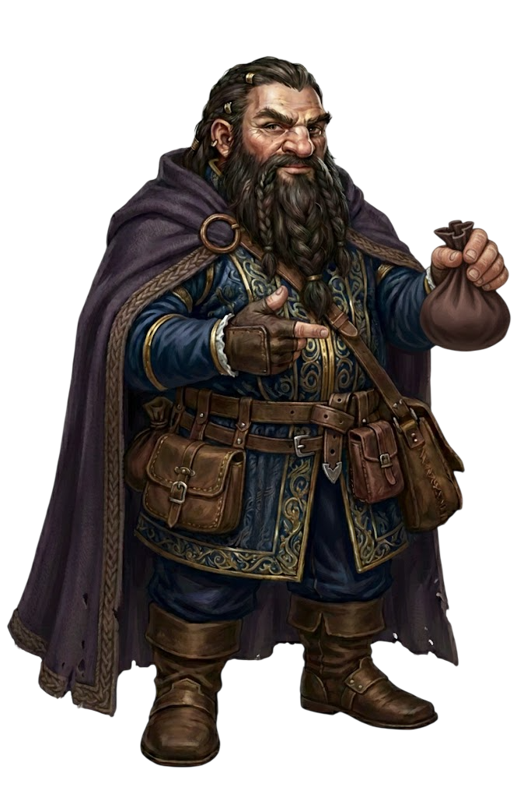
Brottor
Brottor
Brottor Dankin è un nano mercante nato e cresciuto nella montagna di Mirabar. Qui, oltre ada abitarci è anche dei due ingegneri più famosi della città. Oltre il suo amore per il denaro e le invenzioni, Brottor è amico di Bartolomiao e alleato dell'Alleanza dei Lord.
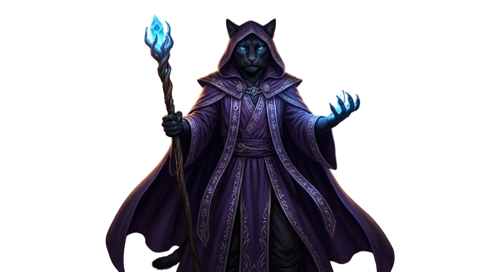
Bartolomiao
Bartolomiao
Bartolomiao è un tabaxi mago, che vive a Neverwinter ed è un fedele servitore dell'Alleanza dei Lord. Bartolomiao, con il suo pelo nero e gli occhi azzurri, ha un'aura misteriosa, ma buona e accogliente. La sua conoscenza della magia e delle leggende lo rende un alleato prezioso per il gruppo. Dispone di una grande biblioteca e di uno studio protetto da magie che impediscono l'orecchiamento e dove passa intere gioenate ad allenare la sua mente calma, calcolatrice e mistriosa.
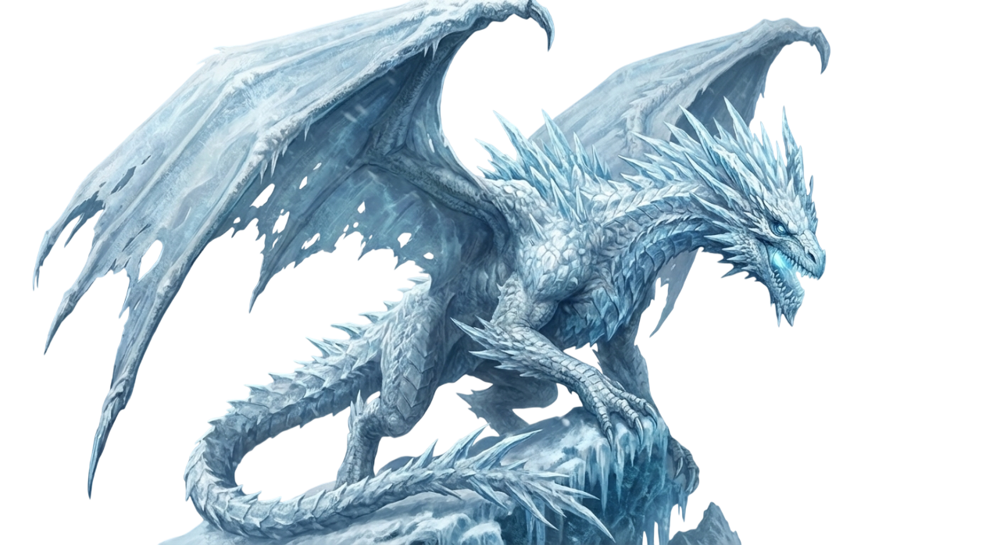
Drago Bianco
Drago Bianco
I draghi bianchi, i più piccoli, i meno intelligenti e i più animaleschi dei draghi cromatici,
vivono nei territori gelidi e prediligono le aree artiche o le montagne ghiacciate. Sono rettili
crudeli e feroci, spinti dalla fame e dall'avidità. Un drago bianco ha gli occhi di una belva, un
corpo esile e una cresta spinata. Le scaglie di un drago bianco cucciolo sono bianche e candide come neve.
Man mano che il drago cresce, il bagliore scompare e alcune scaglie iniziano a scurirsi, così quando un drago
bianco raggiunge la vecchiaia, mostra delle chiazza color azzurro pallido o grigio chiaro. Queste sfumature
aiutano il drago a mimetizzarsi meglio nei territori di ghiaccio e pietra in cui va a caccia e a svanire
dalla vista quando sfreccia in un cielo coperto di nuvole.
Primitivi e Vendicativi. I draghi bianchi
sono privi dell'astuzia e del senso tattico di buona parte dei draghi. Tuttavia, grazie alla loro natura
bestiale si dimostrano i cacciatori migliori tra tutti i draghi, concentrandosi ossessivamente sulla sopravvivenza
e sull'uccisione dei loro nemici. Un drago bianco ingerisce soltanto cibo congelato, divorando le creature
uccise dalla sua arma a soffio quando sono ancora rigide e ghiacciate. Rinchiude le altre vittime nel ghiaccio
e lo seppellisce sotto la neve, e chi trova una macabra dispensa di questo tipo capisce che la tana di un
drago bianco deve trovarsi nelle vicinanze. Un drago bianco conserva i corpi delle sue più grandi vittime come
trofei, congelandone i cadaveri in modo che possa continuare ad ammirarli e a gongolare. I resti di giganti,
remorhaz e altri draghi sono spesso esposti in bella mostra all'interno della tana di un drago bianco come monito
per gli intrusi. Sebbene la loro intelligenza sia limitata, i draghi bianchi hanno una memoria straordinaria.
Ricordano ogni torto e ogni sconfitta subita e sono noti per orchestrare feroci vendette contro le creature
che li hanno offesi. Questo solitamente include i draghi d'argento, che fanno la tana negli stessi territori.
I draghi bianchi sanno parlare come tutti gli altri darghi, ma lo fanno raramente,
a meno che non siano spronati a farlo.
Padroni Solitari. I draghi bianchi evitano
tutti gli altri draghi, ad eccezione di quelli bianchi del sesso opposto. E anche in quel caso,
li cercano al puro scopo di accoppiarsi e restano assieme soltanto quanto basta per generare una
progenie, prima di ritirarsi di nuovo in isolamento. I draghi bianchi non tollerano la presenza di
alcun rivale nei pressi delle loro tane, quindi tendono ad attaccare le altre creature senza alcuna provocazione,
considerandole troppo deboli o troppo potenti per essere lasciate in vita. Le uniche creature che solitamente
servono un drago bianco sono quegli umanoidi intelligenti dotati di forza sufficiente a reggere alla collera
del drago bianco e in grado di sopportare le perdite inferte dalla sua fame. Questo include anche i veneratori
di draghi come i coboldi, che sono una presenza ricorrente nelle loro tane. Una potente creatura a volte può
ottenere l'obbedienza si un drago bianco attraverso una dimostrazione di potenza fisica o magica. i giganti
del gelo sfidano i draghi bianchi per dimostrare la loro forza e acquisire prestigio tra i loro clan, ma molte
tane di draghi bianchi sono disseminate dalle loro ossa spezzate. Tuttavia, un drago bianco sconfitto da un gigante
del gelo diventa suo servitore, accettando di essere comandato da una creatura superiore in cambio dell'opportunità di
esercitare il suo dominio sulle altre creature che servono il gigante o si oppongono ad esso.
Tesori sotto i Ghiacci.
i draghi bianchi adorano il freddo scintillio del ghiaccio e prediligono i tesori che mostrano quanlità analoghe,
soprattutto i diamanti. Tuttavia, nei remoti climi artici in cui vivono, i tesori dei draghi bianchi a contenere
zanne d'avorio di trichechi e mammut, sculture in osso di balena, polene recuperate dalle navi affondate, pellicce
e oggetti magici strappati ad avventurieri troppo audaci. Le monete e le gemme di un drago bianco giacciono sparpagliate
per tutta la tana, luccicando come stelle quando vengono colpite dalla luce. I tesori e i forzieri più grossi
sono incastonati all'interno di strati di brina generati dall'arma a soffio del drago e protetti da un solido strato
di ghiaccio trasparente. Il drago, grazie alla sua grande forza, può accedere alle sue ricchezze facilmente, mentre le creature
inferiori dovranno passare ore a spaccare o a fondere il ghiaccio per raggiungere il grosso del tesoro. Grazie alla sua infallibile
memoria, un drago bianco ricorda sempre come è entrato in possesso di ogni moneta, gemma o oggetto magico del suo tesoro e associa a
ogni oggetto una vittoria specifica. I draghi bianchi sono noti per essere difficili da corrompere, dal momento che vedono in ogni offerta
di tesoro un insulto alla loro capacità di uccidere la creatura che lo possiede per impossersarsene con la forza.
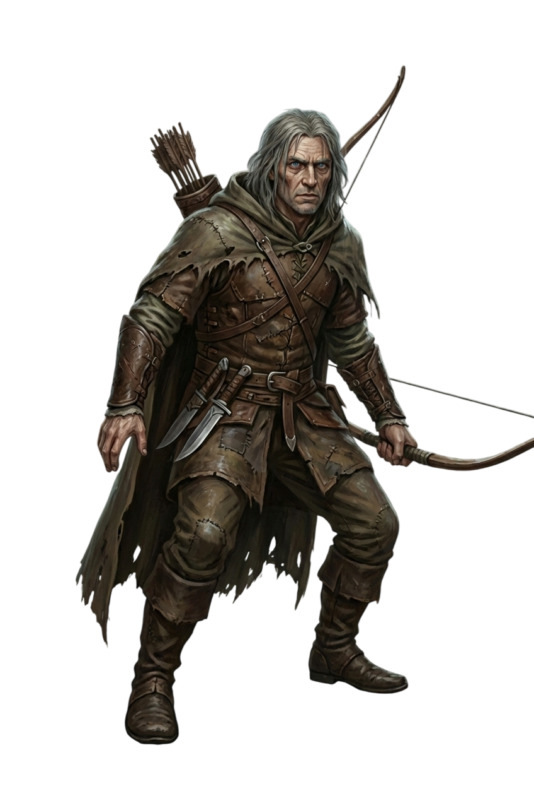
Maccus
Maccus
Maccus è un umano ranger, a giudicare dall'aspetto si direbbe che è sulla sessantina d'anni. Padre di Trogo, colui che gli ha insegnato tutto sulla sopravvivenza nei posti più spietati e pericolosi ora si è rivoltato contro di voi. Appartenente alle Dieci Frecce, vi ha attaccato con un gruppo di suoi seguaci fuori dalla tana del drago per ottenere le scaglie, ma voi lo avete fermato e Trogo gli ha tagliato le mani. Tuttavia, è scappato.
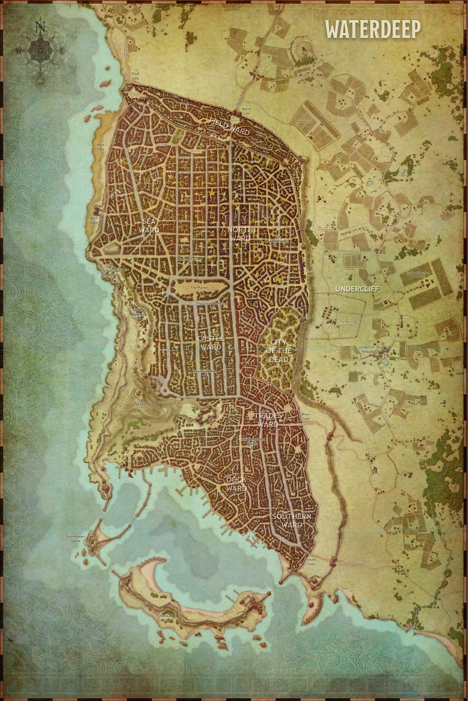
Waterdeep
Waterdeep
La città degli Splendori, nota anche come la Corona del Nord, sorge dalle acque profonde della sua baia e sale fino alla grande montagna che si affaccia sul Mare delle Spade. In tutto Faerûn, questa grande metropoli incarna l'apice di ciò che una grande città deve essere in termini di ricchezza, influenza e stabilità. A Waterdeep i cittadini lavorano, i nobili si danno delle arie e i grandi lord mascherati tramano e complottano, mentre i mercanti sgusciano tra tutto questo per accumulare monete e continuare a trarre profitto come meglio possono. Le botteghe e i mercati di Waterdeep offrono merci di ogni tipo provenientio da ogni angolo di Toril e per chi ha denaro e pazienza a sufficienza, anche il più raro degli oggetti può essere procurato. Gli avventurieri prive dell'una e dell'altra cosa possono trovare con la massima facilità ogni sorta di impiego, dalla scorta a una carovana alla protezione di un nobile, fino alla richiesta di indagare su un complesso di rovine o un particolare mostro del Nord. Anche se Waterdeep si erge intatta da molti secoli, soltanto ora sta tornando ai fasti di un secolo e mezzo fa. I recenti tumulti ebbero inizio quando gli dei presero ad aggirarsi per i Reami e a uccidersi a vicenda sotto gli occhi dei mortali, per poi ascendere di nuovo ai loro ranghi divini proprio nelle strade di Waterdeep. Alcuni decenni dopo, altre divinità iniziarono a morire, la magia si estinse e una serie di catastrofi alterò la natura stessa della città. Lord Neverember distrusse la flotta della città e poi, invece di ricostruirla, ingaggiò equipaggi di marinai a pagamento da Mintarn (e trasse profitto da questa manovra). Ora la Città degli Splendori si sta riprendendo. Il porto è stato sgomberato dai relitti delle navi che componevano il vecchio quartiere di Riva Velata e Waterdeep possiede di nuovo una sua flotta. La Guardia cittadina (il suo esercito), la Vigilanza (la sua forza di polizia). la Marina e la sua famosa Cavalleria dei Grifoni sono state riformate, anche se ci vorranno anni prima che tutto torni alla normalità. Un'epidemia ha allontanato buona parte dei residenti dai Cunicoli e da Ombrabassa, e vivere o scavare sotto la superficie della città è stato proclamato illegale per chiunque non sia esplicitamente autorizzato dai lord a farlo. Per qualche strano motivo, perfino l'aria sembra più fresca. Tutti a Waterdeep hanno le loro idee riguardo a questo o a quel cittadino influente che potrebbe essere un lord della città e c'è anche chi non esita a dare voce alle sue convinzioni, ma quei pochi che sono stati affrontati su questo tema non hanno mai dichiarato di essere un lord e nessuno di coloro che li ha affrontati è mai riuscito a fornire prove dei suoi sospetti. Gli altri lord cittadini, i nobili di Waterdeep, sono tutt'altro che nascosti. Si atteggiano a superiori, spendono denaro a piene mani e dettano legge sulle mode cittadine, che a loro volta finiscono per dettare la moda in tutto il Nord per quello che riguarda gli abiti, le armi, i gioielli, la musica e ogni altra preferenza che possa cambiare in un batter d'occhio a seguito di un capriccio e una spesa sufficientemente esorbitante. Oltre settantacinque famiglie nobili abitano a Waterdeep, coinvolte in questioni d'affari, rivalità e lotte interne di ogni genere. Un titolo nobiliare fornisce numerosi vantaggi. Agendo dalla sua dimora, un nobile può facilmente innalzare un mediocre artigiano dall'anonimato, sopprimere le speranze di un ricco mercante o fornire sostegno a un'ambiziosa banda di avventurieri intenzionata a guadagnare fama e ricchezza. L'unica vera forma di competizione a cui i nobili devono fare attenzione è quella degli altri nobili. Tali rivalità danno origine a una miriade di pettegolezzi e di intrighi di ogni genere, sebbene i nobili di Waterdeep tentino sempre di mantenere una facciata di civiltà nei loro bisticci. È raro che tutti i nobili si trovino d'accordo su qualcosa, ma almeno su una questione tutte le casate nobili la vedono allo stesso modo: il loro rango non dovrebbe mai essere compromesso dall'inclusione di nuovi arrivati e sicuramente da alcuno spendaccione intenzionato a comprarsi un titolo nobiliare con il denaro. Quando sotto il governo di Lord Neverember divenne legale la vendita di titoli nobiliari da parte delle casate più indigenti, consentendo quindi a chiunque di diventare un nobile, molti capi delle casate di sangue più antico furono oltraggiate dalla cosa, specialmente quando videro alcuni acquirentio perdere tutto il loro denaro e rivendere il loro titolo nel giro di una o due stagioni. Il Lord Svelato Laeral Silverhand, con grande sollievo di quelle casate, ha intuito che questa decisione era una follia e ha ottenuto dai Lord di Waterdeep non solo un sostegno sufficiente ad abrogare questa pratica, ma anchea ripristinare i titoli e le terre di quelle famiglie nobili che li avevano persi in un atto di follia. Questo cambiamento le ha procurato il caloroso supporto di buona parte dei nobili. Ora i mercanti Zhent, Thayan e Balduriani hanno denaro a sufficienza da comprarsi una proprietà in città, se lo desiderano, ma quando lo fanno, la villa che acquistano non fornisce loro alcun titolo nobiliare o diritto legale.
I quartieri di Waterdeep
Da lungo tempo Waterdeep è divisa in alcune ampie regioni chiamate quartieri. Per i cittadini, i quartieri sono un elemento essenziale di Waterdeep, mentre gli stranieri spesso non capiscono più in quale quartiere si trovano o che significato abbia il nome del quartiere. I nomi dei vari quartieri indicano i contenuti degli edifici e le varie attività che si svolgono al loro interno, ma non esiste alcuna legge che limiti una determinata attività o una classe di abitanti all'interno di uno specifico quartiere.
Quartiere Commerciale
Questo quartiere, una sottile striscia di terra stretta tra il Quartiere del Castello e la Città dei Morti, è il centro del commercio cittadino. Buona parte delle transazioni più piccole e dei commerci rispettabili si svolgono in quest'area.
Quartiere dei Campi
Nato in tempi più recenti, il Quartiere dei Campi occupa lo spazio tra le mura esterne e quelle interne a nord (un'area usata in passato come accampamento carovaniero). Questo quartiere è cresciuto in modo disordinato e incontrollato e ospita buona parte dei residenti più poveri della città.
Quartiere del Castello
Come indica il nome, il Quartiere del Castello ospita il Castello di Waterdeep, il Palazzo di Piergeiron e molti altri edifici pubblici cittadini. Questo quartiere è abitato soprattutto dai cittadini ricchi o influenti che non fanno parte della nobiltà. Le altre strutture appartengono a istituti culturali o religiosi che generalmente offrono i loro servigi alla città nella sua interezza e non ai soli residenti del quartiere.
Quartiere del Mare
Chi vede crescere la propria fortuna si assicura una dimora nel Quartiere del Mare, per unirsi alle famiglie nobili che da sempre risiedono nell'area. Questo quartiere si trova a nordovest della città e ospita buona parte delle ricchezze cittadine, nonché le più sfarzose ville della nobiltà cittadina (ad eccezione di quelle nel Quartiere Settentrionale).
Quartiere del Porto
Buona parte dell'area portuale cittadina rientra nel Quartiere del Porto, come anche le attività e i magazzini che dipendono dal porto cittadino, appena restaurato. Si tratta di un quartiere affollato, attraversato da molte strade tortuose, dove la gente può agevolmente sbrigare quegli affari che in altre zone della città provocherebbero l'intervento della legge.
Quartiere Meridionale
Questo quartiere è caratterizzato da stalle, magazzini e negozi collegati al commercio via terra. Molti degli abitanti sono gente che lavora sodo caricando e scaricando le merci delle carovane e sbrigando altri lavori di bassa manovalanza.
Quartiere Settentrionale
Questa zona è considerata il quartiere degli abitanti più ricchi e rispettabili, poiché ospita numerose ville nobiliari, appartamenti di lusso e locande rinomate.
Città dei Morti
Il cimitero cinto da mura della città è l'unico posto di Waterdeep dove è legale seppellire i defunti. È usato da molti cittadini come parco pubblico durante il giorno ed è un elegante spazio verde di aggraziati mausolei e statue imponenti dove i cittadini possono allontanarsi dalla frenesia e dalla confusione del resto della città.
Sottoscogliera
Pur non essendo considerato da molti un quartiere della città, i piccoli villaggi e le fattorie che si estendono a est della città sono stati legalmente annessi a Waterdeep quando la città ha eretto una caserma e un campo di addestramento nell'area.
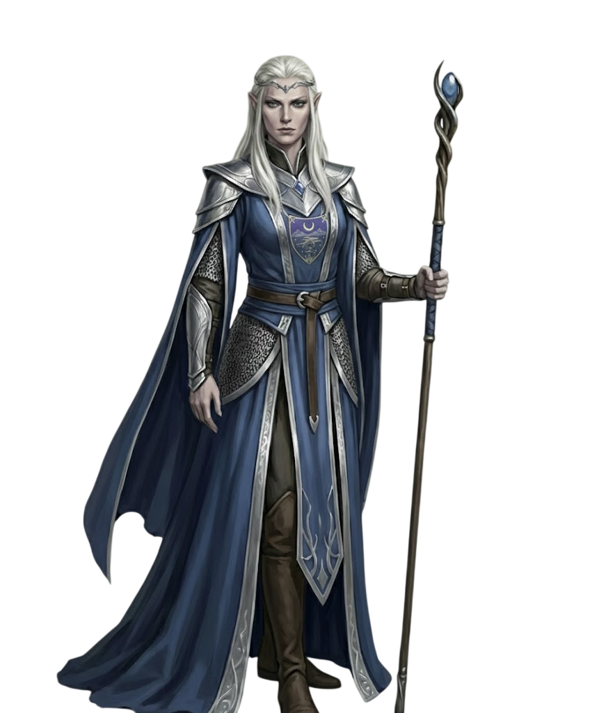
Lord Svelato - Lady Laeral Silverhand
Lord Svelato - Lady Laeral Silverhand
Il più sorprendente tra i nuovi sviluppi di Waterdeep è forse il ritorno di Laeral Silverhand. Ritenuta morta da tempo, è tornata in scena solo nei tempi più recenti e si è rapidamente guadagnata il sostegno di tutti i lord mascherati, fino a soppiantare Dagult Neverember come Lord Svelato di Waterdeep. Sono rimasti in pochi a ricordare Lady Laeral come'era ai tempi del suo precedente soggiorno in città, ma gli elfi che vivono a Waterdeep da più di un secolo affermano che ora è molto più riservata di un tempo. Il nuovo Lord Svelato non parla mai della sua famiglia: se qualcuno nomina i suoi figli, il suo defunto marito (il rinomato Bastone Nero, Khelben Arunsun) o una delle sue famose sorelle, Laeral tronca bruscamente qualsiasi conversazione a cui stesse partecipando. I suoi rapporti con il Bastone Nero attuale, Vajra Safahar, sono cordiali, ma è raro che le due conversino da sole e molti credono che Lady Laeral abbia ben poco da imparare da una maga che deve fare ancora molta strada prima di dirsi sua pari. Come sempre, il Lord Svelato viene scelto e sostenuto da vari lord mascherati che portano maschere, tuniche e amuleti per camuffarsi quando partecipano pubblicamente a un processo o a un consiglio, e che determinano l'agenda politica di Waterdeep.
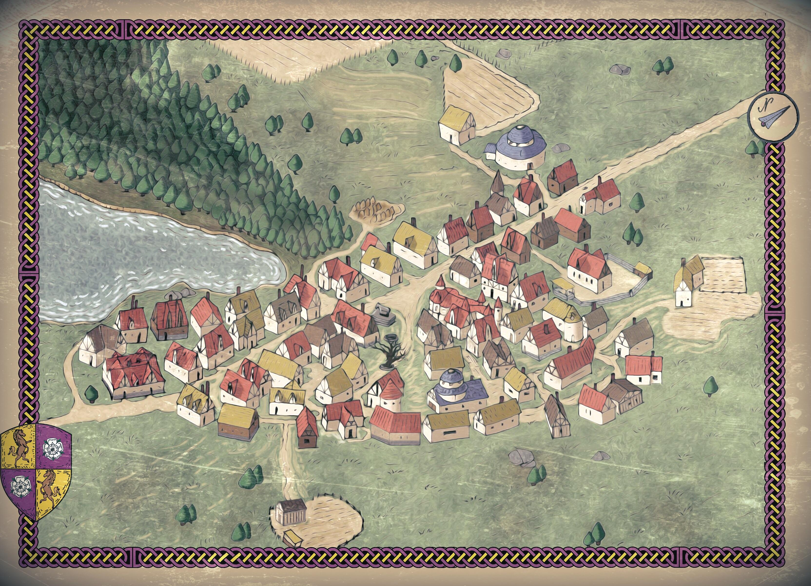
Amphail
Amphail
Il piccolo paese di Amphail, che trae il suo nome dal fondatore, un ex-signore della guerra di Waterdeep, ospita poco più di settecento anime, eppure ha chiesto e ottenuto l'adesione all'Alleanza dei Lord poco meno di un secolo fa, grazie alle manovre delle famiglie nobili che controllano le sue terre. Mentre in passato era poco più di un'estensione dell'influenza di Waterdeep, Amphail è gradualmente diventato il campo di gioco delle famiglie nobili di quella città, un luogo dove poter tramare contro i rivali e inviare i loro rampolli più scalmanati a sfogare le loro tendenze distruttive senza danneggiare la reputazione della famiglia nella società vera e propria. In quanto membro dell'Alleanza dei Lord, ora Amphail ha diritti pari a quelli di grandi città come Neverwinter e Baldur's Gate nelle questioni che riguardano le altre potenze della regione, nonostante la sua evidente inferiorità numerica e di forze. La sovranità di Amphail significa che, nonostante le pattuglie della Guardia Cittadina di Waterdeep a volte cavalchino fino ad Amphail per controllare come vanno le cose, l'unica vera autorità in paese è il volere delle famiglie nobili che lo controllano. L'attività principale di Amphail è l'allevamento di cavalli: il paese vero e proprio è un ottimo posto dove trovare cavalcature sostitutive e briglie, finimenti, biada e gli altri accessori necessari alla cura del proprio cavallo. Molte fattorie sono dotate di maniscalchi o quanto meno di garzoni in grado di ferrare rapidamente un cavallo, e le strade del paese sono disseminate di ferri di cavallo usati a ogni angolo. I visitatori che giungono ad Amphail vengono spesso cortesemente avvertiti di "fare attenzione agli altolocati" o di "badare alle selle d'argento", ma chi ignora tali avvertimenti non deve aspettarsi alcun tipo di aiuto se finisce nei guai con la nobiltà. Gli Amphailan sono sospettosi per natura e si fanno taciturni in presenza di chi ostenta le proprie ricchezze o il proprio rango, avendo imparato fin dai primi anni di vita che i nobili sono gente a cui piace far pesare la propria superiorità, a discapito di chiunque si trovi nelle vicinanze senza avere abbastanza denaro o un titolo abbastanza importante da tenere loro testa. Ritengo che questi popolani siano una preziosa fonte di informazione riguardo alla gente di cui non si fidano. Da parte loro, i giovani nobili che si aggirano in paese sembrano impazienti di provocare guai per il semplice fatto di essere in grado di farlo. Le faide e le rivalità che in città produrrebbero soltanto una serie di misurati insulti possono sfociare in scontri veri e propri quando queste teste calde si trovano lontani dagli occhi vigili dei loro genitori. I duelli sono vietati da lungo tempo per comune accordo, a causa delle faide di sangue che provocarono in passato, ma le mani volano spesso alle impugnature delle spade dopo qualche scambio verbale troppo acceso. Pressoché ogni altra trasgressione nobiliare viene inflitta impunemente agli abitanti di Amphail. Chi subisce danni alle proprietà o peggio per mano dei nobili è costretto a perdonare l'offesa in cambio di un risarcimento in denaro o di una promessa fatta in nome del trasgressore (a simboleggiare il fatto che i parenti del giovinastro rispetteranno qualsiasi obbligo). Alcune attività si guadagnano da vivere esclusivamente portando le comodità di Waterdeep fino ad Amphail e creando luoghi di ritrovo dove i giovani nobili possano sentirsi a casa. Le tre più grandi famiglie che hanno interessi rilevanti ad Amphail sono le Casate Amcathra, Ilzimmer e Roaringhorn; buona parte delle monete e degli affari locali prima o poi passano per le mani di una di queste casate o dei suoi intermediari. Quando Amphail si è unita all'Alleanza dei Lord, queste tre casate hanno fatto sentire con forza la loro voce e ora governano il paese, cambiando la famiglia al comando a ogni Scudiuniti. L'attuale Lord Guardiano è Dauner Ilzimmer, che parla a nome del paese presso l'Alleanza dei Lord. La Casata Amcathra deve ancora scegliere chi gli succederà al prossimo Scudiuniti. Le Casate Jhansczil e Tarm possiedono degli allevamenti più piccoli nell'area e la Casata Eagleshields è proprietaria di alcuni terreni nei pressi di Amphail e continua a rispettare la sua lunga tradizione di prendersi cura degli animali malati delle fattorie vicine e vendere bardature di qualità e attrezzature di vario tipo. Tra i popolani, la famiglia Oglyntyr è quella che possiede l'allevamento di mucche e di cavalli più grande e più longevo di Amphail e fornisce alcuni dei più pregiati grigi di Amphail (stalloni fedeli e intelligenti, graditi da molti come cavalcature personali) ai nobili e ai viaggiatori nella regione. Una nuova famiglia, non nobile ma benestante, ha acquistato il vecchio allevamento Baldasker. Sospettiamo che la famiglia Hemzar, sconosciuta sia ad Amphail che a Waterdeep prima dell'acquisto, come spesso accade nelle questioni d'affari più misteriose di Amphail, possa essere sostenuta in segreto da qualche casata nobile indeterminata. I miei contatti mi riferiscono che gli Oglyntyr hanno chiesto agli Ilzimmer di unire le forze per schiacciare questi affaristi rampanti e gli Ilzimmer stanno riflettendo sull'offerta. Ho visitato l'allevamento Hemzar e ritengo che questa mossa sia sconsigliabile. Gli Hemzar, una famiglia di discendenza Tashlutar, mi sono sembrati gente capace e sicura della sua posizione, nonostante il mio avvertimento. Non ho avuto l'opportunità di esplorare la proprietà nella sua interezza, ma alcuni segni che ho notato mi fanno pensare che gli Hemzar siano preparati ad allevare e addestrare bestie ben più pericolose dei cavalli e delle mucche. Sono stata tentata di avvertire gli Oglyntyr, ma quella famiglia è odiosa come soltanto i peggiori nobili sanno essere. Meglio lasciare che le cose si risolvano da sole. Le famiglie nobili di Waterdeep che inviano i loro figli ad Amphail, o consentono loro di recarsi in quel paese, sperano che i loro figli e le loro figlie apprendano qualche lezione di vita mentre sono lontani da Waterdeep. Se intendono fare danni o ferire i sentimenti altrui nel farlo se non altro lo faranno lontano dagli occhi vigili degli ' altri hobili cittadini. Questi giovani nobili credono che non esista alcuna figura di spicco ad Amphail che possa essere danneggiata dai loro eccessi e credono anche che non ci sia nessuno degno di nota ad ascoltarli quando si vantano o discutono a voce alta dei loro nuovi piani: in più occasioni mi è capitato di venire a sapere di una minaccia semplicemente ascoltando i rampolli delle varie casate vantarsi gli uni con gli altri di questioni che sarebbero dovute restare in famiglia. Ad eccezione degli eccessi dei suoi nobili, Amphail è un paese pacifico: la minaccia di una ritorsione su grande scala da parte di Waterdeep e dell'Alleanza dei Lord proietta una lunga ombra su chiunque tenti di disturbare la tranquillità locale. I nobili di Waterdeep hanno borselli che traboccano di monete d'oro e non esiteranno a spenderle come necessario pur di proteggere il loro terreno di gioco preferito ... e di punire chiunque tenti di interferire nel loro controllo su di esso. L'unica cosa che i nobili sembrano non poter togliere di mezzo col denaro è la puzza di concime, che nei mesi estivi aleggia pesantemente su tutto il paese. Ma è quel concime che contribuisce a mantenere attivo il vero commercio di Amphail: sfamare Waterdeep tramite i prodotti delle molte fattorie che circondano il paese. Dato che la maggior parte delle fattorie di Amphail è di proprietà della Casata Ammakyl, i membri di quella famiglia nobile sono di gran lunga quelli che traggono maggior profitto dal commercio locale. Si considerano bravi proprietari terrieri nei confronti dei contadini che coltivano la terra per loro conto e non mancano di segnalare qualsiasi minaccia subita dagli onesti e diligenti popolani all'attenzione del Lord Guardiano e dei Lord di Waterdeep. Qualsiasi cosa minacci le attività agricole di Amphail minaccia la Città degli Splendori direttamente e tali situazioni vengono affrontate rapidamente e drasticamente dalla Guardia cittadina. Di conseguenza, anche i nobili più scapestrati si assicurano di non creare troppi problemi nelle terre degli Ammakyl a Amphail: quelle casate che lo fanno rischiano di trovarsi improvvisamente a corto di scorte alimentari a ridosso di un festino o di qualche altro evento in cui il prestigio della famiglia è in gioco.

Baldur's Gate
Baldur's Gate
Sulla Strada della Costa, a circa sessanta chilometri risalendo il corso del Fiume Chionthar dalla Costa della Spada, sorge la popolosa città di Baldur's Gate. Questa città portuale ospita decine di migliaia di abitanti ed è circondata da terreni poco fertili, ma la sua baia riparata, lontana dalle mareggiate che flagellano la costa, ne fanno un luogo ideale dove smistare le merci che provengono da ovest nel Mare delle Spade, dall'entroterra via fiume e da nord e da sud lungo la costa. A Baldur's Gate il commercio prospera e la città gode di grande successo nell'accaparrarsi le monete delle altre potenze. Purtroppo, Baldur's Gate vanta un legame di vecchia data con il dio oscuro Bhaal. Soltanto pochi anni fa, la città fu teatro del terrificante ritorno del Signore degli Assassini. A seguito di una serie di delitti, uno dei duchi della città, Torlin Silvershield, fu rivelato come l'Eletto di Bhaal e fu sottoposto a una mostruosa trasformazione: convertì numerosi cittadini in assassini sanguinari, fomentando una sommossa e provocando numerose morti prima di essere eliminato da un gruppo di intrepidi avventurieri. Ancora oggi, gli echi di nuovi omicidi riverberano in tutta la città e oltre, e le voci che parlano di macabri delitti inspiegabili si diffondono da Baldur's Gate. Baldur's Gate è governata dal Consiglio dei Quattro, composto da quattro duchi che votano sulle questioni legali e sulle politiche cittadine. Tra i quattro, viene scelto un singolo granduca che ha il potere di dirimere le parità quando il consiglio giunge a uno stallo. L'attuale Granduca è Ulder Ravengard, affiancato dai Duchi Thalamra Vanthampur, Belynne Stelmane e Dillard Portyr, il granduca precedente, che ha ceduto il posto a Ravengard dopo i recenti problemi cittadini. Dopo il consiglio viene il Parlamento dei Pari, un gruppo composto da circa cinquanta Balduriani che si incontrano quotidianamente (anche se mai in sessione plenaria) per discutere del futuro della città e per consigliare i duchi su tutte le questioni, grandi o piccole che siano. In ogni determinato momento, circa un quarto dei pari è composto dai membri più potenti della società della Città Bassa, mentre gli altri, che si fanno chiamare patriar, provengono dalle famiglie nobili della Città Alta. La difesa della Città Alta è affidata alla Guardia, la forza di polizia uffiéiale dei cittadini benestanti. Ha il dovere di difendere i patriar e di far rispettare la legge, e poco altro. Nel resto di Baldur's Gate, a mantenere la sicurezza e l'ordine pensa la compagnia mercenaria dei Pugni Fiammanti, una forza in teoria neutrale che è libera di combattere nei conflitti esterni alla città, purché non si schieri contro Baldur's Gate. Per tradizione, il più alto ufficiale dei Pugni Fiammanti è uno dei duchi della città e il Granduca Ulder Ravengard rispetta con orgoglio questa tradizione. Entrare nei Pugni Fiammanti è facile e gli avventurieri di una certa esperienza possono facilmente salire di grado (e, di conseguenza, esercitare un'influenza politica maggiore) una volta che diventano membri permanenti. Molti ufficiali di alto rango erano un tempo degli avventurieri che si sono "ritirati" a vita militare. Sia nella Città Alta che nella Città Bassa, il mondo del crimine è controllato da uno sfuggente gruppo noto semplicemente come la Gilda. I duchi non riconoscono il potere di questo gruppo in modo significativo (almeno non pubblicamente), ma tentano (o almeno fanno finta) di arginare la sua influenza dove e come possono. Ho perso il conto di quante bande reclamano il territorio nella Città Bassa e nella Città Esterna, e tutti sembrano giurare fedeltà alla Gilda. Fino ad ora gli sforzi per distruggere la Gilda sono falliti, in parte per l'incapacità di chi non ne fa parte di identificare chiaramente un capo del gruppo, ma sicuramente anche per la vergognosa mancanza di volontà che i governanti cittadini dimostrano quando si tratta di proteggere il popolo.
La Città Alta
La Città Alta di Baldur's Gate è il rifugio ben protetto dei nobili cittadini, i patriar. Appollaiati in cima alla loro collina, i patriar guardano il resto di Baldur's Gate dall'alto in basso in ogni senso del termine, sfruttando la loro ricchezza e influenza per convincere il Consiglio dei Quattro a proteggere il loro stile di vita. Sebbene ci sia stato un periodo in cui un ricco mercante o un potente avventuriero potessero sperare di scalare i ranghi fino a diventare un patriar, ora non c'è più posto, né in senso fisico né in altro senso, per ampliare ulteriormente la classe della Città Alta. Ora, solo coloro che sono nati nelle famiglie patriar vivono nei manieri che occupano la parte più antica di Baldur's Gate. I più poveri tra questi si spingono addirittura a vendere la mobilia e le decorazioni interne di casa pur di mantenere una facciata agiata presso gli altri patriar. Sono in molti ad affermare che la vita dei patriar sia caratterizzata dal lusso e dalla decadenza e per molti di loro questo è sicuramente vero. Tuttavia, alcune famiglie si sforzano onestamente di migliorare la città e quasi ogni famiglia possiede almeno un membro attivo nel commercio: a prescindere dalla nobile stirpe d'appartenenza, tutti devono avere in tasca soldi a sufficienza per mangiare. Esiste solo una famiglia di patriar non umani, quella dei nani Shattershield, che hanno vissuto a Baldur's Gate abbastanza a lungo da avere imparato alla perfezione dai loro vicini umani come si guarda il resto della cittadinanza dall'alto in basso. Esistono varie porte che separano la Città Alta dalla Città Bassa, ma quella più degna di nota è la famosa Porta di Baldur, che dà il nome alla città. Le merci passano soltanto attraverso questa porta, dove vengono tassate dalla città ... nonostante il fatto che furono proprio queste tasse che condussero la città a essere sottomessa dai suoi primi duchi e a erigere le mura che circondano la Città Bassa. Le altre porte sono utilizzabili solamente dai patriar e dal loro seguito. Chiunque non sia in presenza di un patriar, non indossi la livrea di un patriar o non porti una lettera che dimostri la sua dipendenza presso un patriar deve passare per la Porta di Baldur quando vuole spostarsi dalla Città Alta alla Città Bassa e viceversa. Chiunque voglia sgusciare da una parte all'altra della città farà bene a tenerlo a mente.
La Città Bassa
La Città Bassa si estende attorno alla baia con una miriade di case in pietra dal tetto di ardesia (a volte non troppo solide) dove vive chi sbriga i lavori più pesanti e impegnativi della città. Baldur's Gate dipende dal commercio e tutto il commercio entra ed esce dal Porto Grigio. I manovali che caricano e scaricano le navi, che inventariano i carichi e trasportano le merci, che riparano le chiglie e rammendano le vele lavorano tutti qui. L'umidità è densa in questa parte della città (c'è chi dice che sia trattenuta dalle Vecchie Mura) e le lampade, accese e alimentate dai cittadini e non dalla città, sono le uniche luci che penetrano la nebbia. Molti degli abitanti locali sono abbastanza saggi da portare lanterne o lampade e i visitatori che non hanno ancora imparato a farlo possono in genere ingaggiare un giovane Balduriano che faccia loro da guida per le strade. Molto tempo fa, anche la Città Bassa era cinta da un cerchio di mura per beneficiare delle protezioni cittadine, ma la separazione tra i due quartieri è più netta che mai. I Pugni Fiammanti hanno il compito di mantenere l'ordine nella Città Bassa e lo fanno con brutale efficienza stroncando sul nascere quasi tutti i tentativi più sfacciati di furto, vandalismo o violenza. Mentre , i mercanti delle altre città possono sperare un giorno di unirsi alla nobiltà, a Baldur's Gate un mercante può ambire al massimo a diventare un mercante tremendamente ricco e influente. Diventare un patriar è fuor di questione. Tuttavia, i Balduriani più ricchi vivono imitando i patriar in tutto e per tutto, acquistando proprietà adiacenti nella speranza di demolirle e di allargare le loro case per scimmiottare i manieri della Città Alta. Il distretto di Bloomridge ospita molte dimore di questo tipo e alcuni patriar protestano a denti stretti, convinti che questi mercanti si stiano concedendo troppo in questo status.
La Città Esterna
Fuori dalle mura, non esistono leggi che limitino le costruzioni o gli insediamenti, quindi quelli che sono troppo poveri per risiedere all'interno della città o per acquistare beni immobili hanno lentamente eretto un terzo quartiere cittadino, vivendo all'ombra delle sue mura, pagando le tasse e ammassandosi su entrambi i lati delle strade che conducono a Baldur's Gate. La Città Esterna è popolata dai più poveri dei poveri, ma anche da coloro che si dedicano ad attività troppo compromettenti, rumorose o fetide per essere accettati all'interno delle mura, quindi i conciatori, i fabbri, i costruttori, i tintori e gli artigiani di ogni genere abbondano. La città fa poco o nulla per aiutare la gente di quaggiù e le anime più caritatevoli (me compresa) a volte si mettono in cammino con un borsello pieno per ritrovarselo svuotato prima di arrivare in fondo alla strada. L'assenza di leggi nella Città Esterna ha generato due strani fenomeni non correlati tra loro. Un distretto Calishita cinto da mura è nato a est della città vera e propria ed è stato battezzato Piccolo Calimshan dai Balduriani. Gli isolati di quel distretto sono separati da una serie di mura, che sono dotate di passerelle sulla cima. Il traffico pedonale può quindi circolare senza essere ostacolato dalle porte che rallentano i carri e le cavalcature. I profughi del Calimshan hanno trovato quaggiù una dimora lontana da quella nazione meridionale e si affidano quasi completamente a se stessi per ogni questione relativa al commercio, alla cultura e alla difesa. Alcuni edifici sono stati costruiti anche sul Ponte del Dragone che attraversa il Chionthar. Botteghe, taverne e caseggiati si affollano sul ponte, sporgono da entrambe le arcate e in certi casi sono addirittura costruiti per pendere dai piloni che sorreggono il ponte. I viaggiatori devono pagare un pedaggio per attraversare il ponte a piedi, su un carretto o su un carro, ma molti giurano che sarebbero disposti a pagare anche di più per poter usare il ponte senza dover schivare i venditori ambulanti e i monelli di strada che infestano l'area.
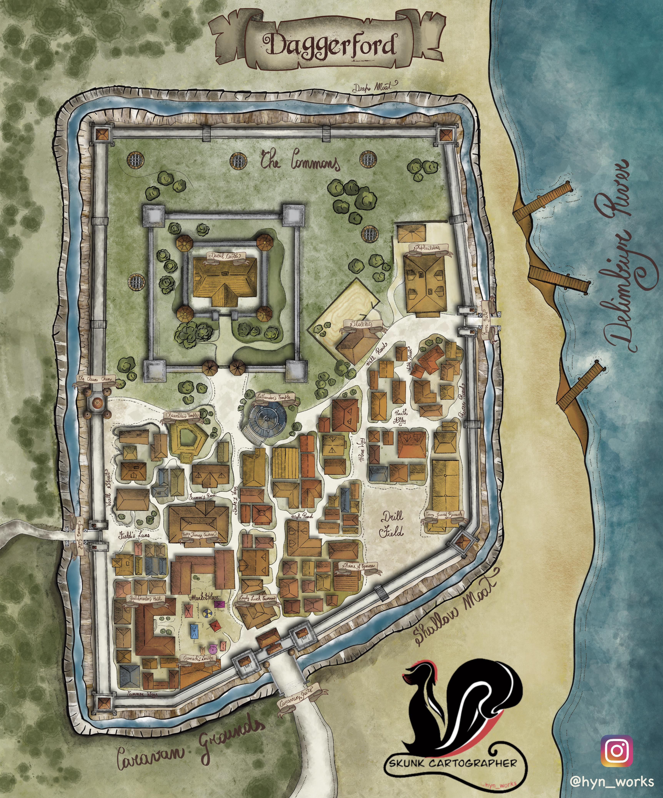
Daggerford
Daggerford
Questo piccolo paese cinto da mura si erge sul fianco di una bassa collina nelle pianure fluviali del Delimbiyr ed è dominato dalla fortezza della duchessa locale, Lady Morwen Daggerford. Il paese vero e proprio, unitamente ai borghi vicini e alle fattorie che si aspettano da Daggerford protezione e guida, ospita circa milleduecento abitanti stabili. Lady Morwen è la sorella del duca precedente, Maldwyn Daggerford, e sembra essere una governante capace e carismatica. L'autorità della famiglia Daggerford nell'area risale all'antico Regno dell'Uomo che sorse nella regione successivamente a Phalorm. Sebbene quel reame si sia sbriciolato in polvere ormai da secoli, c'è chi considera Daggerford l'ultimo bastione di un'epoca di pace, ricchezza e influenza ormai perduta ... ma un'epoca che con la guida giusta potrebbe avere qualche speranza di essere restaurata. Daggerford è un'idilliaca comunità pastorale. Le ampie distese collinari vicine offrono panorami pacifici, anche se a volte sono invase da orchi o goblin razziatori. Le frequenti carovane che si dirigono a nord verso Waterdeep o a sud verso Baldur's Gate necessitano spesso di scorta o di protezione e portano notizie da entrambe quelle città (e dagli insediamenti che attraversano). Numerose locande si tengono sempre pronte a ricevere i visitatori, tranne che nei periodi commerciali più frenetici o in quelli delle festività, quando le locande si riempiono rapidamente e molti abitanti del luogo affittano le loro camere ai viaggiatori. I guerrieri che hanno bisogno di guadagnare denaro possono rimpolpare le loro risorse offrendo i loro servigi come addestratori alle milizie locali o accompagnando le guardie cittadine nei loro pattugliamenti. Le pratiche governative quotidiane sono affidate al Consiglio delle Gilde, composto dai capi dei vari gruppi commerciali informali del paese. Questi maestri di gilda si credono più potenti e influenti di quanto siano in realtà e imitano i Lord di Waterdeep presentandosi mascherati e avvolti in ampie tuniche alle riunioni del consiglio. Questa messinscena, a detta di molti, rasenta la farsa, in quanto tutti gli abitanti di Daggerford sanno con esattezza chi sono i membri del consiglio e non c'è alcuna magia a camuffare le forme, le voci e i modi di fare dei capi delle gilde: una spia ben addestrata può imparare a riconoscere un maestro di gilda dopo soltanto una serata o due di attenta osservazione. Il più grande e più antico edificio di Daggerford è il castello ducale, una fortezza a tre piani cinta da un cerchio di mura a due piani e dotata di una fucina personale, di un ampio cortile da parata e di stalle in grado di ospitare numerosi animali. I duchi di Daggerford mantengono sempre ben fornita la dispensa del castello, per sfamare gli abitanti del castello e tutti i cittadini che potrebbero ripararsi al suo interno durante un assedio. Tre porte consentono di accedere al paese di Daggerford: la Porta del Fiume, che consente di accedere al fiume e da cui i carichi fluviali vengono trasferiti nel paese vero e proprio, la Porta delle Carovane, da cui entra ed esce buona parte del traffico terrestre, incluse le merci trasportate via terra, e la Porta dei Contadini, che rimane quasi sempre aperta, ma è larga soltanto quanto basta per fare entrare un carro o un carretto alla volta. Daggerford è protetto da una milizia. Tutti gli adulti in salute sono tenuti a prestare il servizio militare per un periodo di venti anni. Tutti i cittadini che vivono in paese vengono addestrati dai soldati della duchessa a usare le lance e le altre armi e devono passare almeno un giorno al mese a difendere il paese, sbrigando turni di guardia sulle mura o pattugliando le strade vicine. Grazie al loro addestramento, i comuni cittadini di Daggerford difficilmente si lasciano intimidire da un individuo armato che pretenda merci, denaro o passaggio e tendono ad accettare lavori come mercenari, guardie carovaniere o avventurieri con maggiore facilità. Sebbene risulti meno affabile di suo fratello, tutti ammettono che Lady Morwen governa Daggerford con maggiore competenza di quanto il Duca Maldwyn non dimostrasse. È benvoluta dal popolo, che riconosce il suo spirito onorevole e le sue buone intenzioni nei confronti di Daggerford. Lady Morwen si addestra regolarmente con la milizia e quando fa la sua comparsa in paese può indossare un'armatura con la stessa probabilità con cui indossa le vesti eleganti previste dal suo rango. Fa spesso visita al santuario locale di Tempus, cosa che non fa che rafforzare la sua reputazione di donna di fede. I lineamenti di Lady Morwen iniziano or ora a mostrare i primi segni di invecchiamento, mentre i suoi capelli si sono già imbiancati da tempo. Quasi tutti gli abitanti di Daggerford si conoscono a vicenda, quanto meno di vista. Gli stranieri sono solitamente bene accetti, soprattutto se hanno del denaro da spendere, a meno che non si presentino in paese armati e con intenzioni bellicose. Le guardie stanziate a ognuna delle porte esaminano attentamente tutti i volti nuovi, ma non intraprendono alcuna azione contro coloro che non riconoscono, se non hanno una precisa ragione per farlo. La locanda più grande del paese, la Taverna del Fiume Splendente, è il secondo edificio più grande di Daggerford e ospita molte delle celebrazioni e dei raduni locali. È frequentata dagli avventori più benestanti che hanno voglia di mangiare e di rilassarsi. La locanda è vecchia (molti abitanti del luogo affermano che sia perfino più vecchia del castello ducale) e molti la considerano l'anima vera e propria di Daggerford. Anche le locande della Marea d'Argento e del Gozzo della Lucertola offrono camere dove pernottare, ma la seconda non offre pasti, solo letti. Una delle attività più insolite di Daggerford è la Banca dei Mercanti della Costa della Spada, che accetta depositi dai mercanti itineranti e consente loro di ritirare quei fondi presso una filiale analoga a Waterdeep o a Baldur's Gate. Lady Belinda Anteos (dell'omonima casata nobile di Waterdeep) garantisce che la sua attività è sicura e che i metodi magici con cui la banca comunica le quantità precise di valuta da una città all'altra non possono essere alterati. I membri delle gilde locali che fanno affari fuori città non si fidano troppo della Banca dei Mercanti e preferiscono invece prendere a prestito del denaro dalla famiglia halfling degli Hardcheese, che gestisce la taverna della Mucca Felice. Ufficialmente l'Alleanza non ha preferenze, ma ritengo Lady Anteos un'alternativa sufficientemente fidata all'eventualità di portare con sé grosse somme di denaro in viaggio. È più facile separarsi da una piccola parte del proprio borsello che perdere tutto a causa di una banda di briganti nel corso di un viaggio attraverso le terre selvagge. I visitatori che giungono a Daggerford faranno bene a evitare la conceria a ovest e ad attraversare in tutta fretta il Ponte di Tyndal quando arrivano da sud. La conceria, situata in cima a una collina, non fa alcuno sforzo per contenere la puzza delle sue attività e la Gilda degli Acquaioli riversa le scorie della città a lato del ponte. Nelle giornate più calde, la puzza emanata da entrambi i luoghi può risultare soffocante. Anzi, è proprio questo il motivo che mi ha spinto a chiedere all'Alleanza di assegnare a un agente diverso le pattuglie della prossima estate. Il Ponte di Tyndal è una bassa struttura di pietra che i viaggiatori attraversano quando arrivano da ovest. Sorge nel punto in cui un ragazzo del posto di nome Tyndal respinse un grosso gruppo di lucertoloidi armato soltanto di un pugnale. Una volta raggiunta l'età adulta, sposò la figlia del governante locale, si proclamò duca ed eresse Daggerford sulle rovine di un antico castello. Questa storia, nonché buona parte della storia locale, viene raccontata con entusiasmo a chiunque ne faccia richiesta a Sir Darfin Floshin, un elfo più antico dello stesso Daggerford, che sogna di vedere gli umani, i nani e gli elfi della regione collaborare come un tempo era usanza nel reame di Phalorm. Darfin ha rivestito il ruolo di consigliere per molti duchi di Daggerford nel corso degli anni. Pur essendo stato allontanato dal Duca Maldwyn nel corso del suo regno, Lady Morwen potrebbe dimostrarsi più ricettiva ai consigli di un elfo dorato che ha assistito alla caduta del regno umano di Delimbiyran, alla fondazione di Daggerford e a tutti gli anni che seguirono.

Lady Elianne Daggerford e Credence
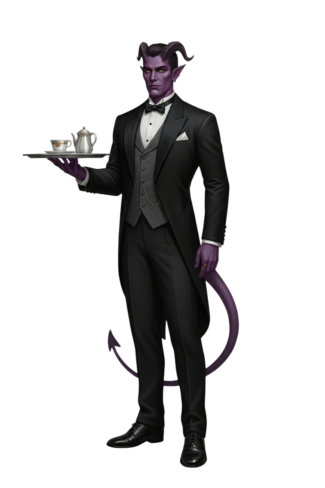
Lady Elianne Daggerford
Lady Elianne Daggerford è la nipote, nonchè futura erede, della Lady regnante della città di Daggerford. Lady Elianne si presenta all'esterno come una donna semplice, gentile, giovane e sensibile, ma appena scambi un colloquio con lei scopri che scorre il sangue dei Daggerford dentro di lei: caparbietà, lealtà, intelligenza e durezza. Queste sono le capacità che si possono trovare in Lady Elianne Daggerford.
Credence
Il fedele maggiordomo di Lady Elianne è un tiefling silenzioso, misterioso, ma allo stesso tempo premuroso, affidabile e dalla presenza forte.
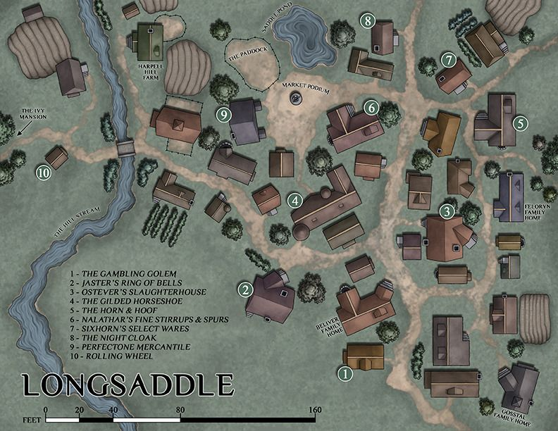
Longsaddle
Longsaddle
Il borgo di Longsaddle è poco più di una doppia fila di edifici che si affacciano sulla Lunga Strada, a metà via del lungo tratto che va da Triboar a Mirabar. Un sentiero si dirama dalla strada in questo punto e serpeggia fino alla Villa d'Edera, la grande casa dei maghi della famiglia Harpell. Furono gli Harpell a fondare il paese più di quattro secoli fa e hanno sempre avuto poca pazienza per gli sciocchi e le teste calde. A volte il loro stesso comportamento si spinge ai limiti dell'insolito e può risultare inquietante (una volta trasformarono in conigli due sette rivali di Malariti, perché avevano disturbato Longsaddle con le loro liti, per poi lasciarli alla mercé dei predatori che avevano venerato), ma restano comunque una delle più potenti congreghe di maghi di tutto il Nord. Gli Harpell sono gente gioviale, ma alquanto isolazionista. Sono tutti maghi che tendono a sposarsi a loro volta con dei maghi e sono le donne anziane della famiglia (per discendenza o per matrimonio) a prendere le decisioni della casata e a governare su ogni aspetto della Villa d'Edera. La famiglia accetta vari maghi apprendisti al suo servizio, a cui assegna i compiti più pesanti o le mansioni di difesa di Longsaddle. Alcuni apprendisti finiscono spesso per fare inavvertitamente da cavie in qualche incantesimo sperimentale, ma si tratta di un pericolo implicito nell'apprendistato presso gli Harpell. Anzi, probabilmente è stato proprio questo spirito di sperimentazione a indurre gli Harpell a fondare il loro paese in un punto così lontano dagli altri insediamenti. I giovani maghi dagli arti strani o deformi, dai capelli di colore insolito o dalle caratteristiche dei mutaforma sono una visione relativamente comune a Longsaddle e non sono più una fonte di sorpresa per la gente del luogo, anche se qualche visitatore potrebbe restarne sconcertato. Considerata la reputazione degli Harpell come maghi potenti e la prolificità della famiglia, Longsaddle e le terre circostanti pullulano di ficcanaso che se ne vanno in giro nella speranza di scoprire depositi di oggetti magici, nascosti come se fossero tesori da bambini. Ovviamente, tali depositi sono rari o inesistenti, ma la gente del luogo non rinuncia mai a divertirsi inviando gli aspiranti ladri a caccia di bacchette, anelli e altri gingilli magici che qualsiasi persona assennata bollerebbe presto come inesistenti. Dopotutto, se il venditore medio di Longsaddle sapesse dove si nascondono certi potenti oggetti magici, sarebbe il primo ad avere tentato di recuperarli già da molti anni. L'attività principale di Longsaddle è l'allevamento di bestiame. Le terre che circondano il villaggio sono occupate per buona parte da centinaia di fattorie e allevamenti di ogni forma e natura, dalle minuscole fattorie ai vasti pascoli occupati da mandrie di bestiame. In quei giorni in cui il bestiame viene portato in paese per la vendita, Longsaddle diventa un luogo rumoroso e polveroso dove i versi degli animali competono con le grida dei contadini che sperano di vendere la loro merce. In tutte le altre occasioni, Longsaddle è invece un borgo silenzioso e quasi sonnolento, ad eccezione del rombo remoto di qualche incantesimo scagliato dagli Harpell che rompe il silenzio. La famiglia studia costantemente vecchie e nuove forme di magia, alterando gli incantesimi e i rituali in varianti innovative e interessanti (almeno ai loro occhi). Questa tendenza li ha spinti a erigere attorno alla Villa d'Edera tutte le interdizioni magiche a cui la famiglia è in grado di ricorrere, onde proteggere la popolazione da un'esplosione vagante, un'illusione terrificante o uno strano cavallo di fulmini che fugge al galoppo. Molte attività di Longsaddle sono concepite per attirare l'attenzione dei viaggiatori, se non altro per il semplice fatto che viaggiare sulla Lunga Strada (un nome quanto mai appropriato) può essere stancante. La prima è il Ferro di Cavallo Dorato, una vecchia locanda a ovest della strada, che offre cibo e bevande di qualità, letti comodi ed è abbastanza vicina alla Villa d'Edera da assicurarsi che nessuno osi disturbare gli ospiti. I proprietari possono accedere ai tagli di carne più prelibati di Longsaddle, quindi i loro arrosti e i loro stufati sono squisiti. Sul lato opposto della strada, la famiglia Ostever offre i servigi della sua macelleria a chi desidera andarsene da Longsaddle con un carico di carne fresca, anziché di animali vivi. Corre voce che le salsicce siano migliorate notevolmente nel corso degli anni, ma agli acquirenti viene sempre detto di "fare attenzione alle zanne", un riferimento a una vecchia battuta che nessuno ricorda. Chi è disposto ad aspettare può incaricare gli Ostever di macellare l'animale, appenderlo e fare a pezzi la carne per suo conto, ma questa procedura può richiedere più giorni di quanto la maggior parte dei viaggiatori sia disposta ad aspettare. C'è sicuramente çla divertirsi ai Giochi dei Golem, dove chi bara ai giochi di carte o di dadi viene buttato in strada e un gioco locale di biglie noto come spargiscudi è molto popolare. Cibo secco, candele, lanterne, selle, corde e ruote per carri sono disponibili presso vari negozi. ;;;;;: Vale sempre la pena sottolineare che sebbene gli Harpell non siano troppo interessati alla gestione quotidiana, il paese resta innegabilmente il loro dominio. È raro che tollerino un insulto e non lasciano mai passare impunito un atto di violenza contro di loro, i loro familiari o la gente del luogo. Un conflitto che coinvolge gli Harpell tende a concludersi in modo rapido e sanguinario e (a meno che il trasgressore non si scusi in modo molto convincente, non sia privo di sensi, morto o perdonato per la sua malefatta) spesso attirerà gli altri Harpell a sostegno dei loro familiari. Gli Harpell si sostengono sempre l'un l'altro nelle questioni pubbliche e nessuno si disturba ad annotare i nomi o le occasioni in cui qualcuno ha dimenticato questa verità. Oltre agli Harpell, le famiglie principali di Longsaddle sono quelle degli allevatori: i Cadrasz, gli Emmert, i Kromlor, i Mammlar, gli Sharnshield, i Suldivver e gli Zelorrgosz gestiscono allevamenti di bestiame a Longsaddle o nei paraggi da molte generazioni ed esercitano una discreta influenza sulla vita quotidiana nella zona. Organizzano i giorni di mercato, aiutano a risolvere le dispute tra le famiglie e fanno da sensali per gli acquisti quando un contadino o un uomo d'affari muore senza un erede. Dirimono le questioni di poco conto e preservano la pace come meglio possono, ben sapendo che se gli Harpell si sentono obbligati a intervenire in una disputa, esiste sempre la possibilità che il colpevole venga incenerito sommariamente. Queste famiglie, più delle altre, tendono a ingaggiare degli stranieri per risolvere qualche problema agli allevamenti, che si tratti delle razzie degli orchi o della comparsa di licantropi nell'area (anche se corre voce che questi ultimi possano essere i discendenti degli Harpell). Gli allevatori principali spesso ingaggiano gli avventurieri non solo per il proprio tornaconto o per difendersi, ma anche per ostacolare o danneggiare segretamente un rivale e ottenere una posizione di vantaggio nelle dispute. Le azioni di quegli avventurieri che esagerano in occasione di una missione del genere possono essere bollate come le stranezze di un gruppo di stranieri; se poi offendono un Harpell e restano inceneriti nel bel mezzo della Lunga Strada, non resterà nessuno da interrogare sulla questione. Il mio miglior consiglio è di imparare a cogliere il sentore della magia nell'aria e di comportarsi di conseguenza.
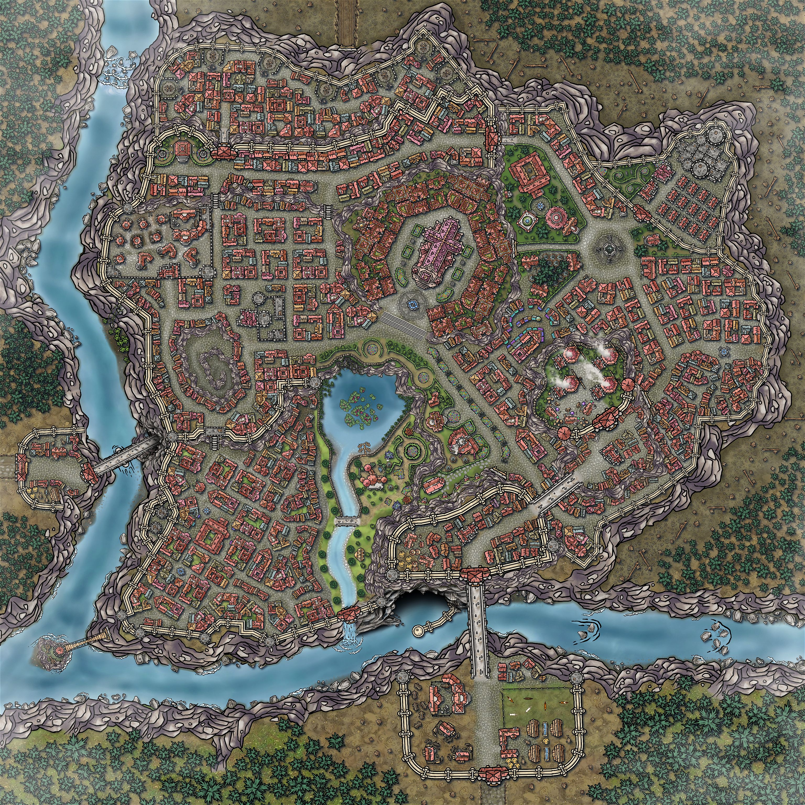
Mirabar
Mirabar
Mirabar è una città umana che poggia su un complesso di caverne naniche. In superficie, la popolazione predominante è quella umana, a cui si mescolano alcuni nani e una manciata di gnomi e di halfling. Il livello più alto della sottocittà è popolato per lo più da nani, a cui si aggiungono alcuni umani. La mescolanza delle razze è dovuta a necessità commerciali, preferenze o abilità personali; così come ci sono alcuni umani a cui piace fare il minatore, distillare forti bevande naniche e lavorare sottoterra, ci sono anche alcuni nani a cui piace vivere a cielo aperto, lavorare al porto o perfino costruire e manovrare una nave. I livelli più bassi della Mirabar sotterranea sono popolati esclusivamente da nani, dato che nemmeno gli umani dalle affinità naniche più marcate riescono a vivere troppo a lungo sottoterra. Quasi tutti i suoi cittadini, a prescindere dalla razza, onorano Moradin e gli dèi nanici, facendo di Mirabar una città nanica nello spirito e nell'etica, se non interamente nella popolazione, proprio allo stesso modo in cui la mia Silverymoon esprime l'ideale elfico della bellezza naturale. Molto tempo fa, a ovest di Delzoun, sorgeva il grande regno nanico di Gharraghaur, un regno di minatori che scavando nei pressi del Fiume Mirar avevano scoperto vasti giacimenti di gemme, apparentemente inesauribili. Come molti altri regni nanici, Gharraghaur cadde sotto le razzie degli orchi, che distrussero il regno e la sua capitale, ma non seppero sfruttare le ricchezze custodite al suo interno. La città sotterranea rimase vuota per interi millenni finché, circa ottocento anni fa, il Principe Ereskas dell'Amn si insediò proprio in quell'area creando la città di Mirabar (che per pura coincidenza conserva l'usanza della desinenza "-bar" che i nani attribuiscono alle cittadelle di tutto il Nord). Fu soltanto quando i nani tornarono a lavorare nelle miniere sottostanti che Mirabar poté veramente prosperare. Mirabar è retta dal suo marchion ereditario, Selin Raurym, che emana gli editti fornitigli dal Consiglio delle Pietre Lucenti. Questo consiglio è composto da un gruppo di nani e da alcuni umani, eletti per decidere le politiche della città e determinare dove saranno venduti i prodotti delle miniere di Mirabar. Anche se è il consiglio che ha mantenuto Mirabar all'interno dell'Alleanza dei Lord per lungo tempo, è il marchion a negoziare con gli altri lord. Finora Selin Raurym si è dimostrato di gran lunga più capace dei suoi predecessori nel prendere decisioni a beneficio della città e il consiglio gli ha concesso ampi margini di libertà per parlare a nome di Mirabar al di fuori delle mura cittadine. La sua minaccia di uscire dall'Alleanza a seguito del mancato aiuto nei confronti delle città settentrionali in occasione delle scorrerie degli orchi più recenti è stata bollata da alcuni come un gesto vacuo, ma ha consentito a Mirabar di sviluppare un rapporto più vantaggioso con Waterdeep e Baldur's Gate, cosa che non è passata inosservata agli occhi del consiglio. La guardia cittadina, l'Ascia di Mirabar, ha come primo scopo quello di scoraggiare e prevenire gli atti di sabotaggio nelle miniere, senza le quali Mirabar crollerebbe. La guardia funge anche da forza di difesa e di polizia all'interno della città. La ricchezza di Mirabar è tale da consentirle di gestire numerosi moli, navi e porti fortificati su molte isole nel Mare delle Spade e, di conseguenza, la città è sempre in cerca di supporto magico e militare per queste difese. Là dove altre città potrebbero usare i vasti proventi di Mirabar per dare sfoggio della loro prosperità, i Mirabarrani li usano per scopi più pratici, assicurandosi che le difese della città siano all'avanguardia, che le sue porte si sigillino saldamente quando giunge il momento di chiuderle e che i suoi edifici e le sue mura siano forti e sicure. Dopo la recente devastazione della città di superficie di Sundabar ad opera degli eserciti orcheschi, tali spese si sono dimostrate più che giustificate, dato che nessuno a Mirabar vuole vedere la città di superficie spazzata via. Farebbe male agli affari, dopotutto. Mirabar non bada a spese pur di difendere le sue ricchezze e ingaggia maghi e avventurieri come necessario per tenere libere le strade da ogni minaccia, indagare sui tentativi di sabotaggio e proteggere in tutti i modi il suo vitale flusso commerciale. Con l'ascesa di Mithral Hall nel secolo scorso e quella odierna di Gauntlgrym, Mirabar teme che il suo ruolo come armeria del Nord sia a rischio. I minatori, i fonditori e i fabbri di Mirabar lavorano duramente per aumentare la loro produttività e migliorare la loro qualità, mentre i gioiellieri e gli smaltatori di Mirabar studiano modi per incorporare antiche tecniche per fondere stili nanici, umani ed elfici nelle loro opere, come si faceva nell'antico Phalorm. Ai nani Mirabarrani (o per alcuni, semplicemente i Mierren) piace far crescere la barba lunga e ampia (a differenza delle barbe affusolate o a punta) e creare trecce con i capelli che crescono altrove oltre al mento, una moda copiata da alcuni umani locali. Adprano le lastre di metallo levigato trattate con lucoreterno, specialmente il rame, che usano per le porte o come pannelli decorativi interni. Spesso incastonano una o più gemme nei pomoli o nelle estremità inutilizzate degli strumenti e delle armi. I nani Mierren tendono a essere ricchi, ad accumulare collezioni personali di gemme rare e insolite, a usare sigilli fatti di gemme incastonate sugli anelli e a investire nelle attività commerciali (anziché in proprietà tangibili) lungo tutta la Costa della Spada. Sono sofisticati e cosmopoliti e si dissociano dagli atteggiamenti isolazionisti e xenofobi di alcuni nani. I nani Mierren dimostrano il loro atteggiamento più aperto svolgendo il ruolo di mercanti diplomatici o sensali negli incontri commerciali e nelle trattative con Fireshear, Neverwinter e ogni altro insediamento con cui riescano ad allacciare un contatto, sia che si tratti di fare da intermediari con altri nani, sia che si tratti di interagire con le altre razze. I Mierren fungono per gli altri nani da traduttori, guide locali e "gente che conosce la gente giusta" nelle città dominate dagli umani sparse lungo tutta la Costa della Spada e in buona parte delle Terre Centrali. Molti Mierren adulti hanno a che fare con mercanti e carovanieri di ogni genere, assicurandosi di non concedere mai l'esclusività, né di coltivare una cerchia di soci in affari e di contatti troppo stretta che possa controllare i loro destini e le loro fortune. Aborrono il solo pensiero che gli umani possano dominarli anche in minima parte. La ricchezza che circola a Mirabar non solo ha esteso la portata e le conoscenze del mondo di tutti i Mierren, ma ha anche permesso loro ogni genere di passatempo personale, come le collezioni di opere d'arte (statuette e dipinti in particolare). Gli alloggi privati di molti Mierren sono arredati con comodi mobili, dipinti grandi e piccoli, statue e campanelle tubolari (spesso metalliche, ma sempre tenui e piacevoli, mai troppo rumorose o stridenti). Le gemme circolano in abbondanza presso le famiglie di Mierren e vengono usate come valuta e in ogni tipo di decorazione personale anziché essere tenute nascoste. Molte vie di Mirabar sono incastonate di pietre semipreziose e gli angoli e gli incroci più importanti sono decorati da prestigiosi intarsi, a volte talmente recenti che è possibile sentire ancora la polvere del gioielliere nell'aria. Eppure, nonostante la ricchezza globale della città, esistono sia i Mirabarrani ricchi che quelli (relativamente) poveri. Non tutti condividono il denaro che le vendite cittadine attirano e i salariati, i cui introiti sono determinati dal lavoro di una giornata o dalle vendite di un mese, non possono aspettarsi di fare fortuna grazie a un contratto puntigliosamente formulato con il loro datore di lavoro. I mercanti e gli affaristi più ricchi badano a non ostentare mai il loro successo eccessivamente; le loro vesti saranno anche fatte di stoffe più pregiate, ma gli stili e i colori restano sempre quelli dei meno abbienti. Le sale d'attesa e i corridoi d'ingresso delle case fortificate dei ricchi sono spartanamente arredati proprio come quelli dei poveri. Preservare l'apparenza di una relativa equità delle fortune è essenziale, perché se qualcuno nella posizione di commettere un atto di violenza (come, per esempio, un armaiolo in grado di accedere a vaste scorte di asce e spade) sapesse con esattezza quanto sono ricchi i Mirabarrani più ricchi, sicuramente scorrerebbe il sangue prima che la parte offesa si dichiari soddisfatta.
Lucoreterno
I nani furono i primi a scoprire il segreto per trattare il loro metallo con il lucoreterno. Questa tecnica fu poi imitata dalle altre razze, con vari gradi di successo. Le armature, le armi e gli altri oggetti di metallo su cui viene applicato il lucoreterno mantengono la lucentezza senza bisogno di essere lucidati e sono resistenti agli effetti naturali (e talvolta anche a quelli magici) di erosione, ruggine e ossidazione.
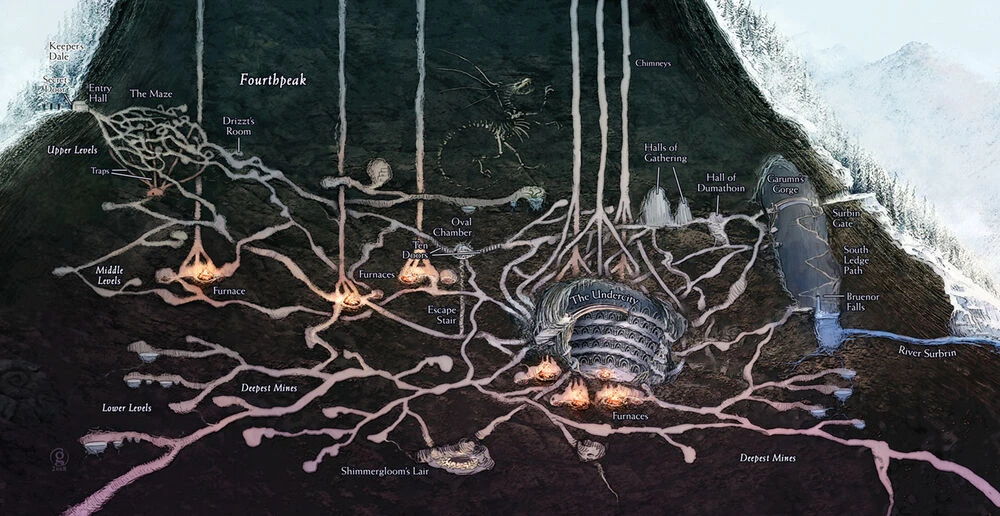
Mithral Hall
Mithral Hall
Mithral Hall, la dimora ancestrale del Clan Battlehammer era un luogo di grandi potenziali ricchezze ai tempi della sua fondazione, all'epoca dell'Antico Delzoun. I nani del Clan Battlehammer lasciarono la Cittadella Adbar e si diressero a ovest nella speranza di trovare dei giacimenti nascosti di mithral sotto le pendici meridionali del Dorso del Mondo. In effetti, li trovarono e così ebbero inizio gli scavi di Mithral Hall. Il Clan Ironshield a sua volta fondò Settlestone nelle vicinanze, con lo scopo di filtrare la vendita dei prodotti ricavati dai giacimenti della miniera. Mithral Hall conobbe vari secoli di profitto prima che i suoi scavi consentissero al drago d'ombra Shimmergloom, di fare irruzione nel mondo. Un insediamento di migliaia di abitanti fu ridotto a poco meno di trecento sopravvissuti, tutti troppo giovani, troppo vecchi, troppo deboli o troppo malati per combattere, che si rifugiarono a Settlestone. Una volta laggiù, attesero per mesi di ricevere da Re Garumn la notizia che le loro terre erano tornate di nuovo sicure. Quando i messaggeri inviati nella città non fecero ritorno, divenne evidente che Mithral Hall era ormai perduta. I suoi nani si diressero a nord, ad Ironmaster, ma furono trattati con tale diffidenza che non poterono rimanere e proseguirono verso la Valle del Vento Gelido. Quando il nipote di Garumn, Bruenor, raggiunse l'età giusta e scelse quale sentiero seguire, radunò un gruppo di alleati per riconquistare la sua vecchia patria e visse molte avventure assieme al gruppo che poi divenne noto come i Compagni di Mithral Hall. Alla fine, Bruenor uccise il drago Shimmergloom e rivendicò Mithral Hall per il Clan Battlehammer dopo quasi due secoli. Dopo la riconquista del trono da parte di Bruenor, i suoi amici personali attirarono alcuni potenti nemici a Mithral Hall, tra cui i drow di Menzoberranzan. Fu per questo motivo, affermano i suoi sostenitori, che il re abdicò in favore del suo antenato Gandalug Battlehammer: per proteggere il popolo dai suoi nemici personali. Alcuni detrattori di Bruenor, tuttavia, sostengono che fu la sua sete di vagabondare a indurlo a partire, ma nessuno si disturba o ha il coraggio di chiederglielo. In ogni caso, quando Gandalug morì, Bruenor fece il suo dovere e tornò sul trono. Prima di morire, Bruenor si rivelò essenziale nell'ottenere il sostegno dei nani al Trattato della Gola di Garumn, che stipulò la pace tra i nani e il Regno orchesco di Molte Frecce. Col passare del tempo, gli orchi violarono il trattato e mossero guerra al Nord e Bruenor fece ritorno dalla morte come se fosse stato evocato per radunare i nani attorno a sé e spronarli a difendersi e a punire i loro nemici. Secondo alcuni, rinunciò temporaneamente alle ricompense che lo attendevano nella Casa dei Nani di Moradin per tornare ad aiutare i suoi amici e la sua gente. Un tale sacrificio e una tale fedeltà rendono un re dei nani degno della sua corona. Bruenor Battlehammer, l'Ottavo, Decimo e Tredicesimo Re di Mithral Hall, non comanda più Mithral Hall o i nani Battlehammer che vivono laggiù. Dopo il suo ritorno in vita, ha concentrato la sua attenzione su Gauntlgrym e non desidera rivendicare la sovranità della sua vecchia dimora. La corona è stata invece offerta al Generale Dagnabbet Waybeard, la nipote del grande generale Dagna, un alleato di Bruenor. L'ultima volta che ho visitato Mithral Hall, alcuni anni fa, ho oltrepassato le rovine ricostruite di Settlestone, dove ora è stanziata una guarnigione di duecento uomini a protezione della strada che conduce a Mithral Hall. Una volta giunto all'ingresso, le gigantesche porte di granito erano rigidamente sorvegliate e pressoché impossibili da aprire dall'esterno. I difensori di Mithral Hall si fanno chiamare la Schiera della Sala, una coorte disciplinata e corazzata, pronta a difendere la città fino all'ultimo nano. La rinomata Brigata Spaccabudella fa parte della Schiera: furie combattenti in grado di incutere paura in qualsiasi nemico abbastanza intelligente da capire chi ha davanti. I viaggiatori a cui è consentito di accedere alla città vengono ospitati nelle camere degli ospiti dei livelli più alti, appena all'interno del dedalo di caverne noto come il Labirinto. Da lì, numerosi sentieri scendono verso i livelli intermedi della città, oltre le sue varie fornaci e avanzando verso i livelli inferiori e le miniere di profondità (dove gli ospiti non possono accedere) o la sottocittà (dove a qualsiasi visitatore che non sia un nano è vietato l'accesso). Nonostante la sua recente reputazione e l'alone di leggenda che circonda il suo re più famoso, Mithral Hall è più una miniera che una città. Come molti reami nanici, ha perso molti abitanti per mano degli orchi e ha subito un'ulteriore riduzione della popolazione quando Bruenor è partito alla riconquista di Gauntlgrym e ha portato con sé una parte degli abitanti. Di conseguenza, i numeri di Mithral Hall sono drasticamente ridotti al momento e resta da vedere quali conseguenze la cosa avrà sul suo futuro.
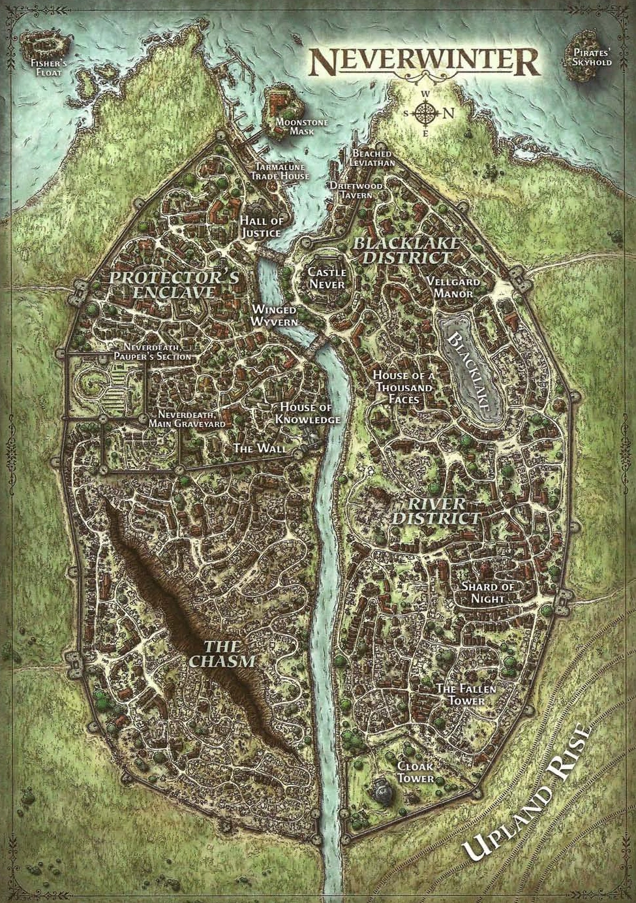
Neverwinter
Neverwinter
Poco tempo fa, Neverwinter fu sconvolta da catastrofi, pericoli e sventure di ogni genere. Ora gli orchi che un tempo minacciavano la città si sono riversati a est per farsi schiacciare dai nani assieme ai loro fratelli di laggiù. Il Baratro che ha squarciato la terra è stato richiuso da una potente magia. La Strada Alta è stata sgombrata e ricostruita e la città ha ripreso a commerciare con Waterdeep e i reami del sud. Quella che appena dieci anni fa era la città riarsa e ferita di Neverwinter è ora un luogo inebriante e frenetico, la cui popolazione sembra impaziente di scrollarsi di dosso le traversie del passato e di creare un nuovo, più luminoso futuro per la città. Quasi un secolo fa, il Monte Hotenow (il vicino vulcano che riscalda perennemente il fiume che attraversa la città) esplose con violenza, distruggendo buona parte di Neverwinter, mietendo migliaia di vittime e sfregiando la città con un vasto baratro che la spaccò in due. Neverwinter divenne una città in rovina e molte influenze esterne (dal Netheril al Thay, da Lord Dagult Neverember di Waterdeep agli agenti degli Inferi veri e propri) cercarono di estendere il loro controllo sulla città. Molti abitanti combatterono duramente per sventare questi pericoli e, col tempo, su Neverwinter tornò almeno in qualche misura la pace. Da quando Dagult Neverember è stato rimosso dalla posizione di Lord Svelato di Waterdeep, ha concentrato tutta la sua attenzione e le sue risorse sulla ricostruzione della città da cui afferma di discendere. A prescindere dalle opinioni della gente riguardo alle sue mire sul trono di Neverwinter, in questi ultimi anni si è dimostrato un governante capace e ispirato e il popolo lo ha accettato come Lord Protettore. Ha fatto richiudere il Baratro, ha restaurato la Strada Alta ed è tuttora in cerca di altri modi per riparare e migliorare la città. Anche se non riuscisse a dimostrare la sua discendenza da Lord Nasher Alagondar, il popolo di Neverwinter ha ormai accettato la sua autorità (la mia presunta antipatia personale verso Lord Neverember non ha nulla a che fare con la mia valutazione della sua autorità politica; trovo semplicemente che quell'individuo sia un insopportabile cascamorto). L'influenza di Neverember si irradia dall'Enclave del Protettore, nel cuore del Palazzo di Giustizia. Con il ritorno in vita di Tyr e il rifiorire del suo culto, il Lord Protettore si è trasferito in una modesta villa privata. Questo sacrificio (e la rinascita della fede di Tyr in quello che prima era il quartier generale del lord) è per alcuni un'ulteriore prova del fatto che Neverember merita di regnare su Neverwinter. Al momento, il Castello Never rimane un pericoloso complesso di rovine, ma Neverember ha intenzione di rivendicarlo e di ricostruirlo per farne un simbolo della rinascita cittadina. I fedeli di Oghma sono giunti a Neverwinter per riportare la Casa della Conoscenza alla gloria di un tempo, ma in aggiunta alla loro presenza, santuari dedicati a ogni genere di divinità sono stati provvisoriamente eretti in ogni angolo della città. Man mano che la città torna lentamente a vivere, probabilmente verranno avanzate richieste di titoli nobiliari e dei privilegi che essi comportano, e sicuramente emergeranno interessi commerciali di vario tipo. Ma il Lord Protettore Neverember non manca mai di precisare che egli è soltanto un protettore, non un re, quindi non può nominare o riconoscere nessuno come nobile. Si formeranno delle gilde, ma sicuramente passeranno anni, se non decenni, prima che una di esse si dimostri abbastanza forte da prevalere sulle sue rivali. La cittadinanza insiste con sempre maggiore frequenza affinché i militari di Mintarn siano sostituiti da guardie locali più rispettabili e che siano personalmente interessate a difendere Neverwinter. Questo diffuso sentimento ha indotto molti isolati a organizzare le proprie milizie improvvisate e il Lord Protettore vuole evitare che si giunga a un conflitto tra queste milizie e i mercenari che ha ingaggiato. Di conseguenza, Neverember ha iniziato a ridurre gradualmente il numero di soldati proveniente da Mintarn, specialmente ora che i cittadini cresciuti difendendo l'improvvisato Muro dalle minacce che uscivano dal Baratro si dimostrano in grado di formare una vera e propria forza militare. Sia Baldur's Gate che Waterdeep si sono offerti di aiutare Neverwinter ad addestrare nuove guardie, ma Lord Neverember preferisce rivolgersi agli avventurieri di una certa esperienza all'ignominia di ottenere aiuto dalla sua città di un tempo. Con la restaurazione della vicina Gauntlgrym, Neverwinter spera di guadagnare un fidato alleato in grado di fornirle solide armi e armature. Sebbene la città al momento abbia ben poco da offrire, le attività commerciali di Neverwinter tornano rapidamente a rifiorire man mano che la notizia della sua rinascita torna a fare di lei un centro di smistamento per i carichi provenienti dal Mare delle Spade, le merci del nord e le monete del sud. Molti degli avventurieri che giungono a Neverwinter in cerca di lavoro o per indagare sulle dicerie che parlano di tesori vicini spesso trovano ulteriore lavoro quando c'è da ripulire un angolo pericoloso della città o da scortare una delle tante carovane che viaggiano lungo la Strada Alta. La speranza del Lord Protettore è che con il rifiorire del commercio e degli introiti, molti maestri artigiani possano tornare a fare il loro mestiere e che Neverwinter possa un giorno meritarsi di nuovo il suo epiteto di un tempo: la Città delle Mani Abili. Esiste ancora un'opposizione all'autorità di Neverember, ma senza una figura di comando a unirla e senza alcun altro potere in città a cui appellarsi, i ribelli stanno lentamente rinunciando ai loro propositi di resistenza per collaborare alla ricostruzione della città. Molti dei Figli di Alagondar, un gruppo ribelle che inizialmente si opponeva a Lord Neverember, hanno iniziato a offrirsi volontari come sostituti dei mercenari di Mintarn che attualmente pattugliano la città. Se i Figli di Alagondar riescono a conciliarsi con i suoi obiettivi, Neverember intende usare questa vittoria per attrarre a sé i nobili di Waterdeep, che al momento esitano a legare la propria sorte a quella di un Lord Svelato fallimentare che è stato a tutti gli effetti esiliato da Waterdeep. Neverember intende convincerli a investire nella città e forse a ricostruire alcune delle ville nobiliari del quartiere, come luoghi dove soggiornare in occasione dei loro viaggi d'affari. Una volta richiuso il Baratro e abbattuto il muro che separava il resto della città dai suoi orrori, un ampio tratto di Neverwinter è ora vuoto, completamente disabitato e occupato soltanto da una distesa di frammenti pietrosi saccheggiati dal resto delle rovine cittadine. Chiunque sia disposto a farlo può recarsi in quest'area, rivendicare un pezzo di terra e costruirci una struttura dove abitare o lavorare. Non c'è ancora una gilda in grado di porre limiti al commercio o alla costruzione e nessun nobile a cui chiedere permessi o da ingraziarsi. Chi cerca di costruirsi un'abitazione o di avviare un'attività può farlo nel modo più semplice e anche chi è privo di particolari abilità o di denaro può usare le mani e la schiena per guadagnarsi da vivere finché non sarà in grado di procurarsi un'abitazione tutta sua. Molte ville dei mercanti lungo il fiume sono state rivendicate e restaurate da chi aveva sentito parlare di Neverwinter com'era un tempo e come potrebbe tornare a essere. Alcuni di questi occupanti non possiedono abilità degne di nota e molti non hanno ricchezze da investire, ma sono tutti animati dalla volontà di lavorare sodo e di arricchirsi col frutto delle loro fatiche. Nuovi negozi e botteghe aprono a ogni decade e molti manovali privi di addestramento offrono i loro servigi come operai o apprendisti; chi non ce la fa passa a un altro tipo di lavoro, approfittando della miriade di opportunità che la città ora offre. Chi non ha altre opzioni può sempre trovare lavoro nelle squadre di drenaggio o di cartografi della rete fognaria cittadina per il Lord Protettore, un compito diventato necessario dopo il cataclisma che ha creato il Baratro. Come tutte le città, anche Neverwinter ha i suoi problemi. Sebbene la maggior parte degli abitanti sia impaziente di mettersi al lavoro, c'è anche chi si guadagna da vivere rubando e depredando coloro che possiedono poco o nulla. Il cibo a volte scarseggia, poiché le locande e le taverne sottovalutano il numero di ospiti che sono in grado di ricevere, oppure i mercanti esauriscono le merci da vendere. Probabilmente passeranno alcuni anni prima che la città si liberi di queste piaghe, ma per ora sono anche le incertezze della vita come questa a fare di Neverwinter un luogo stimolante. Per molti mercanti, specialmente per quelli che vendono il grano e le verdure di cui la città ha bisogno, le opportunità di aiutare una potenza crescente e di arricchirsi nel farlo sono ampie e abbondanti.
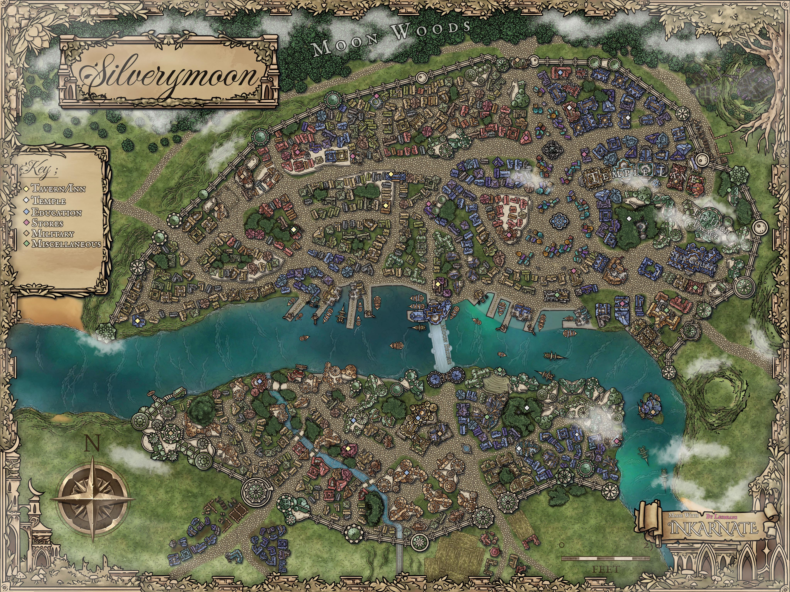
Silverymoon
Silverymoon
La città ricorda le antiche città elfiche dei tempi andati: c'è perfino chi la chiama la Myth Drannor del Nord, anche dopo la restaurazione e la successiva caduta di quella città leggendaria. Anche laddove viene usata la pietra nella costruzione degli edifici, l'edera e altre piante vive crescono sopra, attorno o all'interno di buona parte delle strutture, impartendo alla città un'impronta marcatamente verdeggiante. Nonostante la sua architettura arborea, Silverymoon è una città sofisticata che vanta scuole di musica e di magia, una grande biblioteca, collegi bardici e templi e santuari dedicati a Mielikki, Oghma, Silvanus, Sune, Tymora e Mystra. Le conoscenze, sia quelle da acquistare che quelle fornite da uno studio diligente, sono il vero tesoro di Silverymoon, più di quanto possano mai esserlo le magie e le ricchezze. Sebbene sia facile e piacevole smarrirsi passeggiando tra gli alberi della città, chiunque giunga nei pressi del Fiume Raurin resterà ammutolito di fronte alla vista del Ponte della Luna, il grande arco di energia argentata che attraversa il corso d'acqua. Anche per chi è originario della città, il ponte resta una vista possente e toccante e c'è anche chi afferma di avere scorto la dea Lurue (da cui la città trae il nome) danzare sulla superficie scintillante del ponte quando nessun altro sta guardando. Grazie alla sua bellezza, una visita a Silverymoon è una delle più memorabili esperienze che chiunque non sia un Silvaerano possa fare. Anche tra coloro che combattono i mostri o manipolano la magia regolarmente, Silverymoon è considerato un luogo di tranquillità, di bellezza contemplativa, di splendide opportunità di apprendimento e di rifugio dalle realtà più aspre del Nord. Chi è in cerca di conoscenze perdute o nascoste giunge spesso a Silverymoon per trovarle, magari studiando nella Volta dei Saggi o frugando nell'Accademia delle Mappe alla ricerca di una città o di un bosco perduto. Questi sono soltanto due dei molti edifici e centri di apprendimento dell'Università di Silverymoon, il grande fulcro di conoscenza e saggezza che occupa quasi tutta la zona sud della città. Se esiste una mappa, un libro o un incantesimo da qualche parte nel Faerûn, è probabile che qui siano contenute le informazioni esistenti al riguardo, anche in forma di una semplice citazione in un tomo o di una memoria custodita da uno dei grandi sapienti della città. Candlekeep ospiterà forse la più grande raccolta di conoscenze scritte di tutto il mondo, ma in ultima analisi, quel luogo è una collezione di informazioni fine a se stessa. È a Silverymoon che lo studio e la saggezza vengono veramente onorati. Se avete bisogno di tradurre un tomo antico in un linguaggio perduto, di apprendere le tonalità esatte di una complicata canzone o di decifrare più a fondo Silverymoon, un potente e influente membro di vecchia data dell'Alleanza dei Lord e da sempre un caposaldo delle Marche d'Argento di Luruar, è ciò che molte città sognano di essere: un reame pacifico e tranquillo dove molte razze vivono assieme, mettendo in comune le loro conoscenze, le loro celebrazioni e le loro forze di difesa. La città è popolata i per buona parte dalle razze "buone" (umani, nani, gnomi, elfi, halfling e mezzelfi), ma nessuno viene allontanato da Silverymoon a causa della sua razza, anche se un drow o un orco che dimostrino di cedere al loro retaggio oscuro saranno sicuramente puniti con severità per avere violato la pace cittadina. Non tenterò di nascondere il mio amore per questa città nel resoconto che segue, ma mi sforzerò di essere più imparziale possibile nel descriverla. La Gemma del Nord è un luogo stupefacente, dalle linee architettoniche affusolate, dalle torri svettanti e dalle strutture costruite direttamente sugli alberi. A molti elfi la città ricorda le antiche città elfiche dei tempi andati: c'è perfino chi la chiama la Myth Drannor del Nord, anche dopo la restaurazione e la successiva caduta di quella città leggendaria. Anche laddove viene usata la pietra nella costruzione degli edifici, l'edera e altre piante vive crescono sopra, attorno o all'interno di buona parte delle strutture, impartendo alla città un'impronta marcatamente verdeggiante. Nonostante la sua architettura arborea, Silverymoon è una città sofisticata che vanta scuole di musica e di magia, una grande biblioteca, collegi bardici e templi e santuari dedicati a Mielikki, Oghma, Silvanus, Sune, Tymora e Mystra. Le conoscenze, sia quelle da acquistare che quelle fornite da uno studio diligente, sono il vero tesoro di Silverymoon, più di quanto possano mai esserlo le magie e le ricchezze. Sebbene sia facile e piacevole smarrirsi passeggiando tra gli alberi della città, chiunque giunga nei pressi del Fiume Raurin resterà ammutolito di fronte alla vista del Ponte della Luna, il grande arco di energia argentata che attraversa il corso d'acqua. Anche per chi è originario della città, il ponte resta una vista possente e toccante e c'è anche chi afferma di avere scorto la dea Lurue (da cui la città trae il nome) danzare sulla superficie scintillante del ponte quando nessun altro sta guardando. Grazie alla sua bellezza, una visita a Silverymoon è una delle più memorabili esperienze che chiunque non sia un Silvaerano possa fare. Anche tra coloro che combattono i mostri o manipolano la magia regolarmente, Silverymoon è considerato un luogo di tranquillità, di bellezza contemplativa, di splendide opportunità di apprendimento e di rifugio dalle realtà più aspre del Nord. Chi è in cerca di conoscenze perdute o nascoste giunge spesso a Silverymoon per trovarle, magari studiando nella Volta dei Saggi o frugando nell'Accademia delle Mappe alla ricerca di una città o di un bosco perduto. Questi sono soltanto due dei molti edifici e centri di apprendimento dell'Università di Silverymoon, il grande fulcro di conoscenza e saggezza che occupa quasi tutta la zona sud della città. Se esiste una mappa, un libro o un incantesimo da qualche parte nel Faerûm, è probabile che qui siano contenute le informazioni esistenti al riguardo, anche in forma di una semplice citazione in un tomo o di una memoria custodita da uno dei grandi sapienti della città. Candlekeep ospiterà forse la più grande raccolta di conoscenze scritte di tutto il mondo, ma in ultima analisi, quel luogo è una collezione di informazioni fine a se stessa. È a Silverymoon che lo studio e la saggezza vengono veramente onorati. Se avete bisogno di tradurre un tomo antico in un linguaggio perduto, di apprendere le tonalità esatte di una complicata canzone o di decifrare più a fondo gli enigmatici testi di un sapiente scomparso da tempo, non esiste luogo migliore di Silverymoon dove cercare aiuto. È facile giungere a Silverymoon in cerca di informazioni su un argomento e lasciarsi incantare dallo studio a tal punto da dedicargli tutta la vita ... o capire che era lo studio, e non l'informazione da trovare, ciò che il proprio cuore cercava. Anche se a Silverymoon vivono tutori e sapienti di ogni genere, è raro che le interazioni siano talmente semplici da limitarsi a fare una domanda e ottenere una risposta. Imparare a lanciare un particolare incantesimo, trovare un antico complesso di rovine o svelare uno specifico segreto potrebbe richiedere mesi di apprendistato per dimostrare al maestro che le informazioni saranno tramandate a una persona meritevole. Nella zona est sorge il Gran Palazzo, la capitale della città e del decaduto stato di Luruar. Lord Methrammar Aerasumé vive in questa struttura dalle alte guglie, i cui merli sono scolpiti a forma di testa di unicorno. I soldati della Guardia Suprema, protetti da lucenti armature complete in argento, vegliano sulla residenza e sul centro di potere e tengono lontani tutti coloro che non sono ufficialmente autorizzati a entrare. Da lungo tempo Silverymoon è retta da un alto mago. Uno dei reggenti più longevi e sicuramente il più influente, Alustriel Silverhand, lasciò la carica più di un secolo fa per diventare la Somma Signora di Luruar; il suo posto fu preso da Taern Hornblade. Pur governando saggiamente nel corso dell'ultimo secolo, Taern ha ceduto di recente la guida della città al Gran Maresciallo Methrammar Aerasumé, il figlio mezzelfo di Alustriel, nonché capo delle forze armate di Silverymoon. Taern parla ancora a nome della città per conto di Methrammar in occasione degli incontri con l'Alleanza dei Lord, in quanto il nuovo governante è troppo diretto e impaziente per trattare come si deve con gli altri lord del patto. Silverymoon è difesa da varie forze. I suoi primi difensori sono i Cavalieri d'Argento, i guerrieri dall'armatura lucente che pattugliano la città e le terre vicine. Gli ufficiali dei Cavalieri sono ben addestrati nelle tattiche e nella storia militare e hanno un'alta opinione delle loro capacità e di quelle dei loro compagni... opinioni che non mancano mai di esternare. Sono coadiuvati dalla Guardia Magica, una squadra di potenti maghi e stregoni addestrati nelle magie da battaglia. Viene infine il mythal della città, il grande campo di forza magica che impedisce agli abitanti della città di utilizzare qualsiasi forma di incantesimo. In particolare, gli incantesimi che evocano fiamme, convocano creature o consentono di teletrasportarsi falliscono quando il loro bersaglio si trova entro i confini del mythal. Se un avversario tenta di attraversare il Ponte della Luna, un puro atto di volontà (da parte dei reggenti cittadini o di altri individui specificamente in sintonia con il mythal) è sufficiente a fare svanire l'arcata e a fare precipitare gli aggressori nel fiume. Nessuna città ha subito un duro colpo al proprio prestigio quanto Silverymoon nel corso della recente guerra e del successivo smantellamento delle Marche d'Argento. Anche se cercarono di rafforzare le città vicine, i Silvaerani furono accusati di avere fornito un sostegno insufficiente e incompetente a Sundabar, la cui popolazione di superficie fu interamente spazzata via. Alla fine, tutti gli stati nanici si ritirarono da Luruar, e senza il sostegno di quei regni o l'autorità che Alustriel aveva esercitato alla sua fondazione, la confederazione crollò. La voce di Taern Hornblade non è potente quanto la voce di Alustriel all'interno dell'Alleanza dei Lord, in parte perché il suo affetto e il suo rispetto verso la Somma Signora di un tempo è stato esteso in buona parte a sua sorella Laeral, che ora è il Lord Svelato di Waterdeep. Nonostante le voci che circolarono sulla sua morte alcuni decenni fa, ora in città sono giunte alcune dicerie secondo cui la Somma Signora Alustriel sarebbe in realtà viva e attiva nelle terre meridionali. A quanto pare, non avrebbe contattato né suo figlio, né il suo compagno di un tempo, Taern Hornblade. Considerato il noto e disperato amore di Taern nei confronti della Somma Signora e i lunghi anni necessari per elaborare il suo lutto, è difficile immaginare come Taern reagirebbe di fronte alle prove della sopravvivenza di Alustriel. Silverymoon resta comunque nota come un rifugio sicuro per gli Arpisti nel Nord, dal momento che la città non ritiene gli scopi dell'Alleanza conflittuali con quelli dei Suonatori d'Arpa. Là dove i governanti delle altre città potrebbero vedere nella presenza degli Arpisti una minaccia alla loro autorità, Silverymoon desidera porre fine a ogni forma di tirannia con la stessa determinazione degli Arpisti ed è ben lieta di servire una causa superiore. Per contro, alcuni Silvaerani ritengono che la tolleranza della città nei confronti di certi membri dell'Alleanza (c'è chi parla di Mirabar, chi di Baldur's Gate) pecchi di ingenuità.
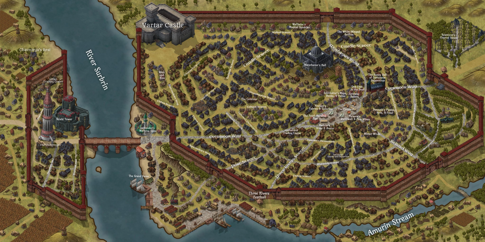
Yartar
Yartar
Situata nel punto in cui le acque dei fiumi Surbrin e Dessarin si mescolano, nei pressi della Strada della Brughiera, Yartar è un paese fortificato che, se non fosse afflitto da una serie di meschine liti interne, potrebbe esercitare una maggiore influenza sui suoi vicini nel Nord. Attualmente si distingue soprattutto per i cantieri che costruiscono i suoi barconi (un'attività industriale importante anche per il commercio degli altri insediamenti) e le sue fiere annuali. Ogni estate, ad eccezione degli anni in cui cade Scudiuniti, Yartar ospita una grande Fiera dei Mestieri, nel corso della quale individui sgraditi di ogni genere si radunano a nord del paese e cercano lavoro come guardie, minatori, garzoni, guide o altri incarichi per cui non siano richieste particolari abilità. Nella maggior parte dei casi, quelli che si presentano alla fiera sono bruti, banditi, contadini che non ricavano più di che sostentarsi dalle loro terre o Uthgardt che desiderano frequentare la gente "civilizzata" per qualche tempo, ma di tanto in tanto è possibile trovare in mezzo alla marmaglia un guerriero capace o un paio di braccia robuste. Nel corso di questo evento, Yartar è invasa da visitatori non certo benvenuti, che rubano merci, vendono oggetti per strada (spesso gli stessi oggetti che hanno appena rubato), incontrano contatti senza scrupoli a cui passano monete, informazioni o refurtiva e più raramente ingaggiano duelli di magia. È fin troppo comune che una nuova compagnia di avventurieri venga a formarsi a una di queste fiere, quando quelli che si distinguono dalla folla grazie alle abilità legittime che vendono al miglior offerente gravitano gli uni verso gli altri e decidono di formare un gruppo. Negli anni in cui cade Scudiuniti, in quel giorno il paese ospita invece una grande festa patrocinata dal tempio locale di Tymora, la Sala Felice delle Coincidenze Fortuite. La festa di Scudiuniti consente di partecipare a numerosi giochi di fortuna, abilità e coraggio, dalle partite a dadi al lancio delle freccette, dalla corsa degli ubriachi agli incontri di lotta libera e altre sfide fisiche. In certe occasioni, i sacerdoti Tymorani usano questa festività per identificare quegli avventurieri che la dea ha chiamato per compiere una particolare impresa, ha scelto per una benedizione o ha marchiato in qualche modo per adempiere a un destino ancora tutto da scoprire. Sia durante la Fiera dei Mestieri, che durante la festa di Scudiuniti, ogni estate almeno una banda di avventurieri sembra esordire a Yartar. Molte scompaiono nell'anonimato, ma la Compagnia Sorridente (la parte ancora attiva di una banda più vasta di guerrieri che si era formata a Yartar circa un decennio fa) gode ancora di un moderato successo e versa un contributo annuale alla Sala Felice. Yartar è retta da un Barone delle Acque la cui carica dura a vita. L'attuale Baronessa delle Acque è Nestra Ruthiol, una donna allo stesso tempo irascibile e crudelmente calcolatrice; anche se non lesina le parole e gli insulti, raramente decide di agire contro un rivale, a meno che non sia sicura di poterlo fare nel modo più efficiente e doloroso. Durante la mia ultima visita a Yartar, qualcuno accusò la Baronessa delle Acque di avere assassinato un uomo, Kaidrod Palyr, che in seguito si scoprì essere il suo amante, e il cui corpo fu rinvenuto nel fiume, con i resti fradici di quello che sembrava essere il mantello preferito di Nestra Ruthiol. Il fatto che Nestra avesse litigato a gran voce e pubblicamente con la moglie di Palyr, Tiarshe, poco prima delle accuse, non contribuì a migliorare la sua reputazione o le sue prospettive di innocenza. Quando finalmente fu scagionata dalle accuse, Nestra Ruthiol fece capire chiaramente che non avrebbe mai più parlato della questione e che chiunque lo avesse fatto negli incontri ufficiali se ne sarebbe pentito amaramente. Anche se le voci continuano a circolare di nascosto, in sua presenza nessuno ha mai più menzionato l'argomento. C'è chi incolpa dell'omicidio la Mano di Yartar, la gilda di ladri locale, ma io credo che Kaidrod sia stato ucciso e la Baronessa delle Acque implicata, al fine di consentire a uno dei suoi rivali in città di prendere il suo posto. Sono i conflitti e gli intrighi come questi che impediscono a Yartar di diventare una potenza prominente nel Nord. Se il paese riuscisse a superare i suoi problemi interni, a trarre vantaggio da ciò che i suoi compagni nell'Alleanza dei Lord possono offrirgli e a trovare un modo per guadagnare maggiori profitti dalla sua posizione lungo le vie commerciali principali (dopotutto si trova a un incrocio che collega tutti gli insediamenti del nordest), Yartar potrebbe presto crescere in dimensioni, ricchezza e influenza. La sua espansione richiederebbe lo sgombro del terreno per erigere ulteriori edifici e la costruzione di un altro cerchio di mura per proteggere i coloni... e ulteriori guardie da ingaggiare per proteggere coloro che si occupano di questi lavori. Grazie alla sua posizione presso due grandi fiumi e la sua vicinanza a un terzo (il Ruscello Ridente, che forma un trio che la gente del luogo chiama, con grande originalità, i Tre Fiumi), Yartar è un paese di pescatori e offre sui suoi tavoli piatti di pesce praticamente a ogni pasto. Granchi, anguille e altra fauna marina fresca sono disponibili sia da mangiare che da acquistare e fungono da fonte primaria di sostentamento per i molti pescatori del paese. L'altra attività commerciale principale di Yartar è la costruzione dei barconi. Quasi tutti i barconi fluviali della regione vengono costruiti, o quanto meno iniziano il loro servizio, a Yartar. La perizia dei carpentieri navali del paese è famosa lungo tutto il Dessarin e i suoi affluenti. È proprio il ruolo essenziale dei barconi di Yartar nei commerci del Nord ad avere procurato al paese un posto nell'Alleanza dei Lord: l'alleanza vuole assicurarsi che Yartar non cada in mani nemiche, cosa che sconvolgerebbe tutta la rete commerciale fluviale. Ciò che non può arrivare o partire da Yartar via fiume viene trasportato dalle carovane e, anche in questo caso, l'ubicazione felice fa del paese un punto di sosta quasi obbligato per molte carovane che transitano tra Waterdeep e Silverymoon. A Yartar, una carovana può ottenere riparazioni rapide, ruote di carro, carretti o interi carri sostituivi e rifornimenti di finimenti e altri accessori. Dato che Yartar dispone di poche attività produttive e di ancor meno vicini negli immediati paraggi, i suoi mercanti sono spesso in diretta concorrenza gli uni con gli altri e non hanno né le risorse per cercare nuovi clie11ti, né lo spazio o i fondi per esplorare nuovi mestieri. Di conseguenza, buona parte dei pettegolezzi, dei furti e delle aggressioni a Yartar è dovuta ai tentativi di un mercante di prendere il sopravvento su un rivale, danneggiando le sue merci, minacciando i suoi manovali o rubandogli patrocinatori e clienti. Per tenere sotto controllo i soggetti più scalmanati, la Baronessa delle Acque utilizza gli Scudi di Yartar, una forza di guardie a cavallo che pattuglia il paese, mantiene l'ordine e respinge gli Uthgardt razziatori che di tanto in tanto minacciano le terre vicine. Gli Scudi sono ospitati nella Torre degli Scudi, una struttura fortificata che sorge sulle rive ovest del Surbrin (mentre buona parte del paese si trova a est), le cui mura esterne sono state abbattute e ricostruite più volte. Si dice che quando un intruso mette piede sul terreno tra le mura, un'orda di scheletri guardiani si animi per attaccarlo, ma nessuno si è mai insinuato in quell'area per scoprire se la magia ancora funziona; ma anche se così non fosse, la presenza di cento guerrieri inferociti pronti a uscire dalla torre a passo di carica per assalire i trasgressori costituisce un pericolo più che sufficiente a dissuadere ogni intruso dal tentativo. Un ponte fortificato collega le rive che separano la torre dal paese vero e proprio. Ancora più imponente degli Scudi o della Torre degli Scudi è il Barcone della Baronessa delle Acque. Questo gigantesco vascello può trasportare duecento soldati o settantacinque Scudi di Yartar assieme ai loro cavalli. I suoi fianchi al di sopra della linea di galleggiamento sono rinforzati in ferro. Dietro le sue balaustre, sono posizionate varie balestre meccaniche in grado di scagliare una dozzina di quadrelli alla volta. Se schierati per combattere contro una forza a riva, gli Scudi fanno partire un paio di raffiche contro il nemico, poi conducono il Barcone a riva e caricano. Nessun razziatore ha mai retto a un assalto del genere. Al centro del paese, si erge il Palazzo della Baronessa delle Acque, una grandiosa struttura che funge sia da dimora che da sala delle udienze della governante. Spesso nel palazzo si organizzano banchetti, ma ancora più spesso le attività si svolgono nelle sue stanze laterali, dove i mercanti che trattano grosse quantità di merce si incontrano in tutta comodità per stipulare accordi o fare proposte che influenzeranno l'intera comunità.

Nestor Ruthiol
Nestor Ruthiol
Nestor Ruthiol, il Barone delle Acque. Ora a capo di Yartar, sembra essere colui che ha ordinato la flagellazione e la decapitazione della famiglia di Lyrëa accusandoli di alto tradimento a Secomber. Sembra essere collegato a Maccus e al Clan delle Dieci Frecce.

Valanthe Myritar
Valanthe Myritar
Lady Valanthe Myritar, moglie del Lord di Silverymoon. È una donna molto attraente e non sembra avere tanto interesse per la nobiltà e la politica e non sembra vedere di buon occhio il Barone.

Balderich Battlehammer
Balderich Battlehammer
Lord Balderich Battlehammer, il re di Mithral Hall. È un nano forte e determinato, con una spiccata antipatia per il Barone e per la politica estera, si nota che preferisce pensare ai fatti ed alle vicende di Mithral Hall.

Dorian Stoneheart
Dorian Stoneheart
Lord Dorian Stoneheart, figlio del lord di Mithral Hall. È un umano attraente, arrogante e con un'antipatia per la politica estera. Sembra che non sia in buoni rapporti con gli ambasciatori e i Lord delle altre città. Si dice che non sia in buoni rapporti nemmeno con suo padre.
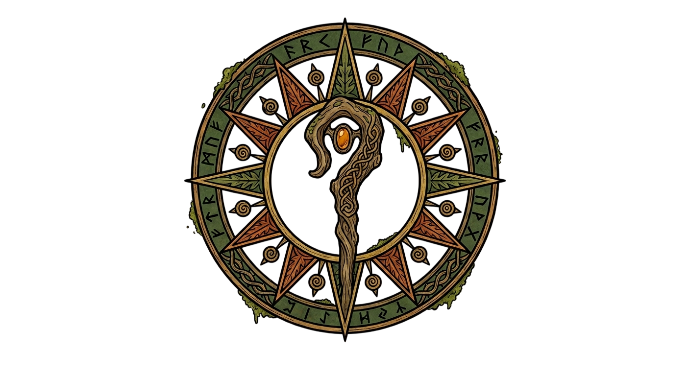
Simbolo circolo druidico
Circolo druidico sconosciuto
Trogo nota sulle armature animate questo simbolo, lui sa appartenere a un circolo druidico. Quale sarà questo circolo? Perchè il loro simbolo si trova sulle armature del Barone?
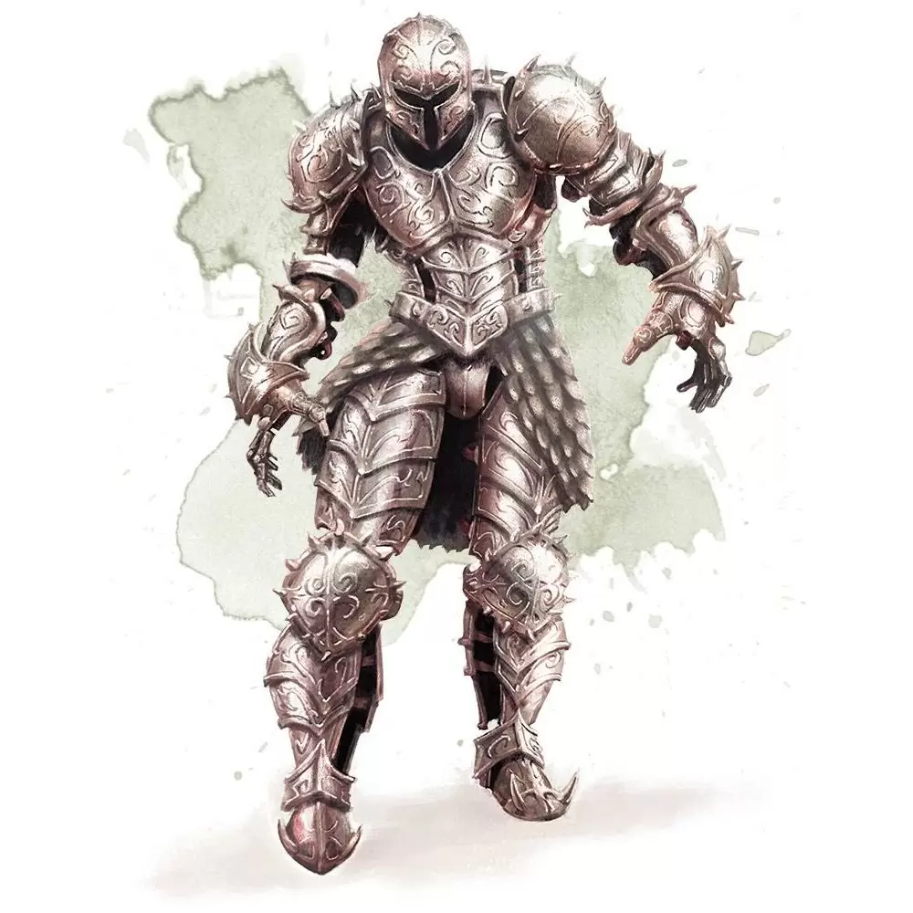
Armatura Animata
Armatura Animata
Queste armature sono infusi di una magia allo scopo di obbedire ai comandi dei loro creatori. Non sembra che siano in grado di parlare o pensare, ma il loro sferragliare è comunque un suono di allarme per chi è nelle vicinanze.